Hold the description and the dog's choices still. Let each swarm build everything else from the bottom up. Do the choices survive, and is each world its own?
PAE-01 showed every SCION swarm as a lens on one paper dog: a style laid over a drawing it did not make. That shows what each swarm would look at, not what it would make. In PAE-02 each swarm builds the same scene itself: what the dog is made of, how it moves, what the place is and what it sounds like. Only two things are shared: the description and the score of the dog's six choices from the PAELEO machine.
If description is operative, the choices survive every operation, and that can be measured. Whether they read as choices is for a critic to say.
21 of the 54, in cohorts chosen to be as far apart as possible in what they build with. Each later cohort reads what the earlier ones failed at, never their films or code.
| Swarm | The dog is | Invariants | Critic |
|---|---|---|---|
| 01 Terry Gilliam | the real archive dog, cut out and engraved, on card pivots | all four hold | PASS (round 2) |
| 02 Lotte Reiniger | a hand-cut silhouette of 23 pieces on a lit paper screen | all four hold | PASS (round 2) |
| 03 Max Ernst | an engraved maquette that wears, then absorbs, a found lion's mane | all four hold | PASS (round 2) |
| 04 Frank Mouris | a torrent of tiles cut from 55 archive shots | all four hold | PASS (narrow) (round 2) |
| 05 Yuri Norstein | hand-cut replacement pieces on its own glass plane, in fog | all four hold | PASS (round 3) |
| 06 John Whitney | dot-lines of light on a skeleton, locking 3:2 with the house | all four hold | PASS (round 2) |
| 07 Peter Foldès | drawn contour keys whose points correspond, blended pose to pose | all four hold | PASS (round 2) |
| 08 Ivan Sutherland | a 24-point graph under 77 constraints, solved every frame | all four hold | PASS (narrow) (round 2) |
| 09 Takeo Igarashi | six drawn sheets bent by an ARAP solver, features held rigid | all four hold | PASS (narrow) (round 2) |
| 17 South Park lineage | flat construction-paper pieces, a whole drawing per view and posture | all four hold | PASS (round 1) |
| 18 Cartoon Saloon lineage | a painted turnaround sheet, swapped by substitution, rigged only in the legs, tail and neck | all four hold | PASS (round 2) |
| 24 Live2D lineage | a parametric 2D rig: head keyforms, art meshes on deformers, pendulum physics | all four hold | PASS (round 1) |
| 27 Remotion | typed capsule components compiled from the score, frame by frame | all four hold | PASS (round 1) |
| 29 GrabCut | the archive dog cut by its own graph cut, then re-performed | all four hold | PASS (narrow) (round 3) |
| 38 Dynamic pose selection | whole Quick, Draw! doodles by real people, chosen, never bent | all four hold | PASS (narrow) (round 3) |
| 39 Multiview substitution | a separate drawing for each view, swapped at its own pivots | all four hold | PASS (round 2) |
| 41 Secondary dynamics | spheres and capsules, with ears, tail, coat and tag on solved springs | all four hold | PASS (round 3) |
| 47 Sound-to-action | 172 inked drawings, each answer cued by a vowel in the voice | all four hold | PASS (round 1) |
| 50 Historical print stage | engraved after the archive dog's own frames, documented and invented kept apart | all four hold | PASS (round 3) |
| 53 Atlanta Moving Image | the archive dog's own footage, re-timed and re-ordered | all four hold | PASS (round 2) |
| 54 Provenance graph | cuts from one archive frame and its own turning frames, every layer hashed | all four hold | PASS (round 2) |
The invariants are the description (the six choices within ¼ s, never inside the house and ending on the sill, moving with the score, the back shown in the refusal). Everything that differs between the films is the operation.
Each choice is a substitution, so the dog's decision is also the film's cut.
The real archive dog from a 1930s home movie, cut out by its mask and engraved by hatching its own light; card parts on pins, a tail cut from its own back fur. Every other figure is a found public-domain cut-out, engraved the same way.
Moved byCard pivots, held frames and hard substitution. The call turns the woman's head into a hinged shouting mouth and the dog's head into a door; the refusal is the card turned over to its blank back, stamped NO; the approach is earned by the door swapped for a lit slab; the lying is a lying card.
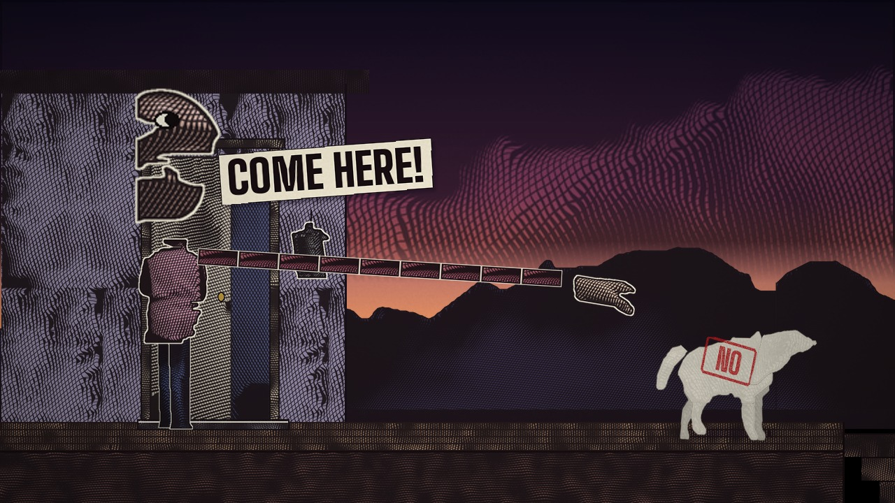
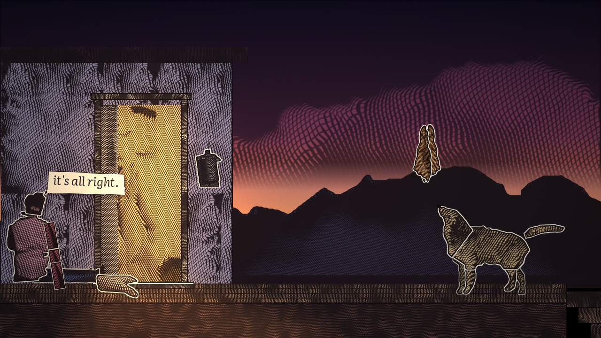
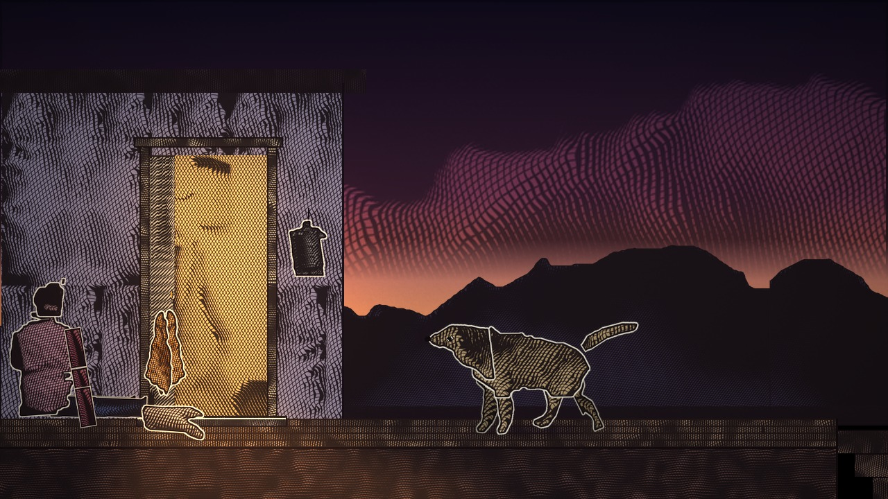

Measured from this swarm's own render (its trace) by check_handmade.py. The score's time, then the time the choice appears.
Each round is a fresh agent that sees the film, the brief and this swarm's SCION prompt, never the builder's notes, and returns a verdict and falsifiable repairs. Stopped at an independent pass.
# SCION 01 · critic round 1 · PASS (narrow) Independent critic (fresh agent; 129 scene frames plus full-resolution stills; verdict from the picture before any builder notes). Per choice: backing away weak (the door-head gag hides the crouch and lowered head); watch reads (2.3); turned back reads (the card's blank back faces away, 3.6; lies with back turned 4.6–7.5); turning to look reads (7.6–8.0, facing the open door); coming head low reads (14.6–23.5); lying across the sill reads (front half inside the frame, rear and tail out); looking in weak (head lifts at 26.7 but points at the jamb, not into the light), staying reads. Bottom-up: yes. Every part cut from found footage and engraved by luminance hatching; visible card pivots; state changes as hard substitutions (door-head, card verso, lying card); commands as Gilliam gags (hinged mouth, telescoping arm). Fundamentally not the PAE-00 cut-out. Craft: the person faces away throughout; edge-on flip frames read as a stick creature; the neck card is an obvious rectangle in the close shot; the butterfly causes nothing (visual noise); the NO stamp is a caption; the cut-in at 25.4 is unmotivated. Rights: all 7 found sources public domain, each matching found-frames.json; sound synthesized; end card credits every source. Invariants hold on screen. Repair conditions (ranked): 1. t=26.6–27.6: head points up and into the lit door opening. 2. t=1.0–2.3: lowered head and crouch visible ≥0.5 s while backing, or the door-head sits visibly low. 3. t=3.5 and 7.6: the edge-on card reads as a card (thin edge, held frame). 4. t=0–4.6: the person or the mouth card faces the dog when calling. 5. t=7.8–10.5: the butterfly causes a visible reaction, or is cut. Keep: the card verso as the turned back, the telescoping arm, the lit-door substitution, the lying card across the sill.
# SCION 01 · critic round 2 · PASS Fresh independent critic (135 scene frames plus frame-level views of both flips; judged the picture before reading round 1). All six choices read at their times: backing away (just: the door-head sits low, legs bent), turned back (edge held 2 frames, blank back stamped NO, lies with back turned to 7.4), turning to look (7.625, facing the lit door), coming head low (14.7–23.6), lying across the sill (front half in the light, rear and tail out), looking in and staying (head rises into the opening 26.7–28.0, clearest 27.2; competes with the moth). Bottom-up: engraved luminance-hatched cut-outs with visible paper edges; every state change a hard substitution (door-head, card back, lying card, lit-door slab, hinged mouth card, telescoping arm). Round-1 conditions: all five met (2 marginally; 3 with one messy frame at 7.583). Remaining defects (optional polish): moth above the head during the look-in; no sound on the approach start and the lie-down sound ~0.3 s late; crumpled frame at 7.583; the low hand reads as a dropped glove; the person's body faces away; the cut-in at 25.4 unmotivated. Verdict: PASS against the brief and the SCION bar. Stopped here per the SCION doctrine (stop at an independent pass); the polish list is kept for a later round.
method · every asset and its rights · ledger of attempts · build · the prompt
No colour on any figure: the whole relationship has to read by outline and the gap between shapes.
A hand-cut shepherd silhouette of 23 pieces on 22 pins, its proportions measured from the archive dog's pose keys (not traced). Tissue hills, a card house front, black card with holes the lamp shines through, lace-cut ornament.
Moved byArticulated joints on a lit screen, paws planted by a contact solver; turns are made by swapping in cut end-on pieces (a rear view, a front view) and four interchangeable heads, and the head always leads the body.
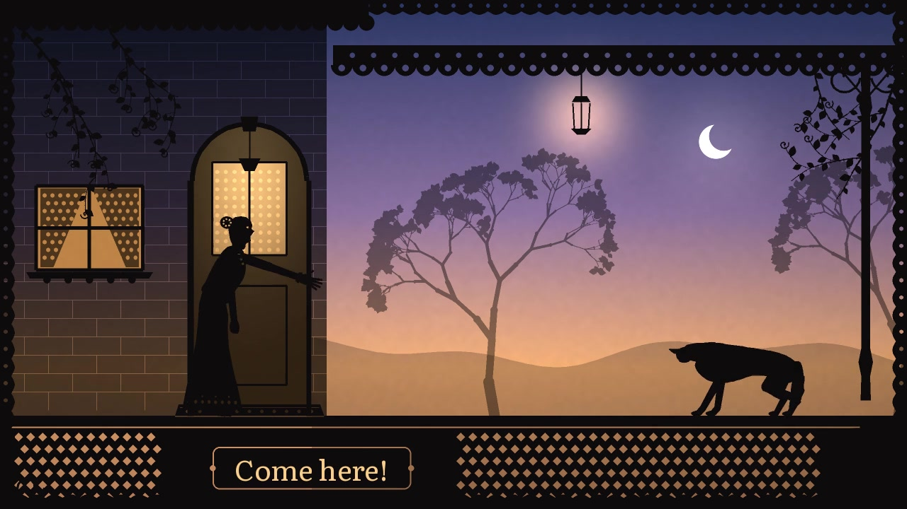
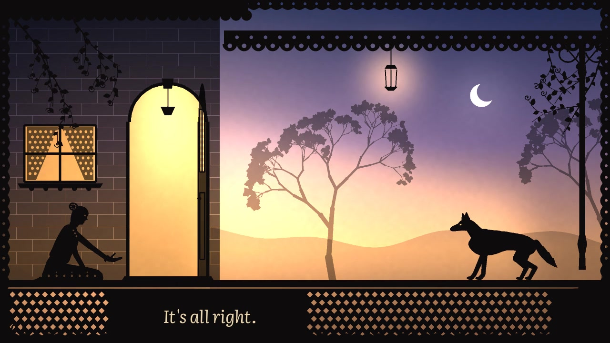
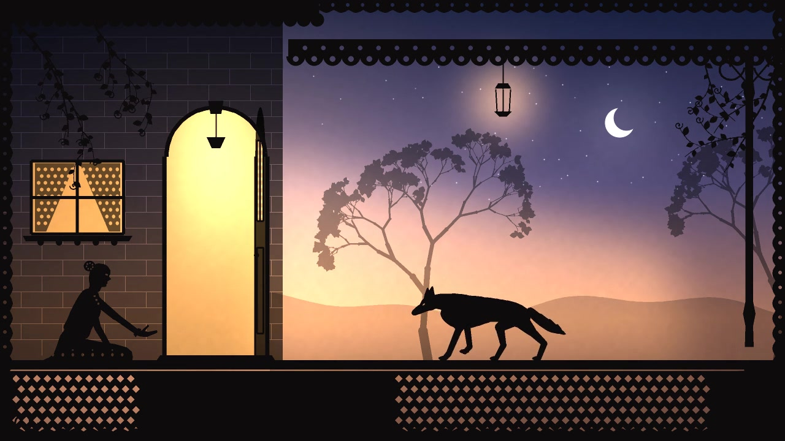

Measured from this swarm's own render (its trace) by check_handmade.py. The score's time, then the time the choice appears.
Each round is a fresh agent that sees the film, the brief and this swarm's SCION prompt, never the builder's notes, and returns a verdict and falsifiable repairs. Stopped at an independent pass.
# SCION 02 · critic round 1 · PASS Independent critic (fresh agent; frames every 0.5 s plus dense windows; verdict from the picture before any builder notes). Per choice: backing away reads (crouch, head low, moves away facing the door); turned back reads, the turn rough (front-on piece 4.08–4.19, faces away ~4.3, lies back to the house 4.5–7.3); turning to look reads (7.57 over the shoulder, faces the door by 8.3); coming head low reads; lying across the sill reads (forequarters inside the lit arch, hindquarters and tail out); looking in weak (head turns, unclear whether into the door or at the person). Reads as a dog in every profile; fails for 1–3 frames in each big turn (3.97, 7.63: the flat puppet squashed sideways into an arched shape). Bottom-up: pure black silhouettes on a lamp-lit screen, translucent planes behind, hinged pieces with round lap joints, solved legs with planted paws, end-on replacement pieces, lace-cut ornament. Fundamentally different from PAE-00 (no colour on the figures; outline and gaps only; light from behind; different animal and place). Not a restyle. Craft: squashed in-betweens at 3.97 and 7.63 (joint limits logged, not enforced); door already ajar and lit at 0 s; sill not a separate surface; ambiguous look-in; "Come in." half hidden in the plaque 26–28. Sound follows events; commands loudest, soft words quieter. Rights: clean (original, public domain, synthesized). Verdict: PASS. Repair conditions (ranked): 1. No folded or arched body in 3.85–4.35 or 7.5–8.35: profile → cut end-on piece (rear view for the turn away) → profile. 2. Door leaf visibly closed before 6.2 s, swinging open 6.2–7.0, light floods only then. 3. Look-in at 26.4: snout into the doorway's light, nose overlapping the arch, eye hole hidden. 4. A raised sill piece separate from the porch floor, the dog's chest on it from 24.4. 5. "Come in." fully inside the plaque on every frame.
# SCION 02 · critic round 2 · PASS Fresh independent critic (frames every 0.5 s, every frame in the dense windows, enlarged crops; judged before reading round 1). All six choices read, each within ~0.15 s of the score: backing away (crouch, head low, steps back facing the door); turned back (profile, then a cut rear-view piece 4.01–4.30, lies facing away 4.34–7.4); turning to look (lifts the head 7.57, over the shoulder, a face-on piece 8.03–8.32, profile to the door from 8.36: "good substitution acting"); coming head low (even pace from 14.77); lying across the sill (forequarters on the raised sill inside the lit arch, haunches and tail out); looking in and staying (muzzle into the light, eye hidden, 27.0–27.7; chin back on paws by 28.3). Reads as a dog in every frame checked, both turns included; no folded in-betweens. Bottom-up: pure black hinged silhouettes on a lamp-lit screen, lace cut-outs, end-on replacement pieces, planted paws, tissue layers; relationships read without colour. Not a restyle of PAE-00. Rights clean. Round-1 conditions: all five met. Remaining polish (not pursued): the rear-view piece lacks a leg gap and hock (could read as a post); one frame at 7.57 joins a face-on head to a lying body; the door light turns the whole sky gold instead of spilling onto the porch; the 7.4 window is loud under the soft voice. Verdict: PASS. Stopped here per the SCION doctrine (stop at an independent pass).
method · every asset and its rights · ledger of attempts · build · the prompt
Authority becomes architecture, then the dog's own fur.
One plate of a collage-novel: a porch at dusk cut in wood-engraving line by one burin, so the seams hide. The person's commanding head is a lion cut from Andy's Animal Alphabet; the hand from The Door to Heaven; a miner's lamp from Anthracite. The dog is a solid maquette of 27 cones and ellipsoids, engraved along its form; no picture of a dog is used.
Moved byThe dog turns as a solid in the plate's camera and walks on a step solver. The collage moves by changing job: the lion's head leaves the person and becomes the keystone, whose knock opens the door; the same lion's mane is pasted on the dog with its white cut edge at the first call, and sinks into its coat, edge lost, as it lies across the sill. The grabbing hand returns small and low.
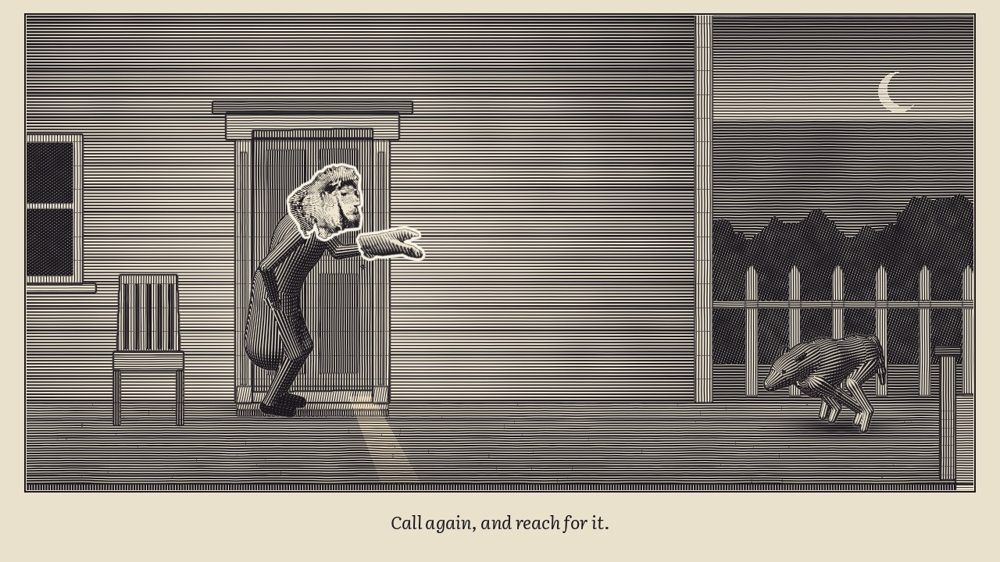
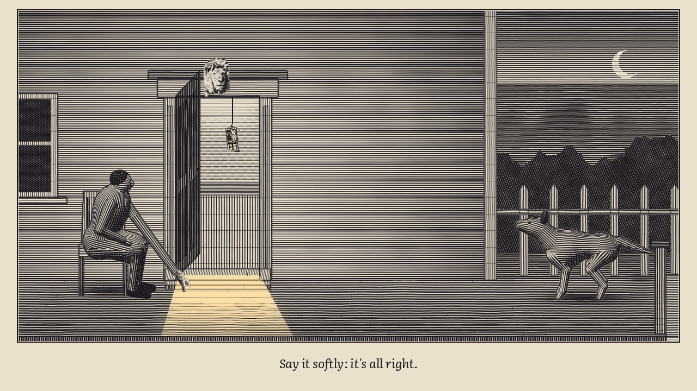
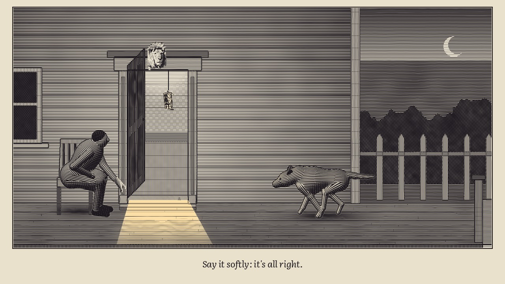

Measured from this swarm's own render (its trace) by check_handmade.py. The score's time, then the time the choice appears.
Each round is a fresh agent that sees the film, the brief and this swarm's SCION prompt, never the builder's notes, and returns a verdict and falsifiable repairs. Stopped at an independent pass.
# SCION 03 · critic round 1 · PASS (narrow) Independent critic (fresh agent; frames every 0.5 s plus dense windows, full resolution; verdict from the picture and sound before any builder notes). Per choice: backing away reads (crouch, tail tucked, backs away facing the door); turned back reads (true 3D rotation through a frontal view that still reads as a dog, away by 3.79, lies turned away 4.4–7.45; at small scale a striped lump); turning to look reads (the head comes round to the door by 7.58–7.71, before the body); coming head low weak (the muzzle below the back, the top of the skull about level with it); lying across the sill reads (flat by 24.4, front half inside the door opening, tail out; a 2D overlap more than a crossing); looking in and staying reads (head into depth toward the lit hall by 26.63; settles and stays). A dog-like quadruped throughout, but the head is rodent-like crouching and pig- or otter-like lying. Language: the lion-headed magistrate is a hybrid noun cut from a found engraving source, its white margin shown while it commands; at 5.5–6.0 the head leaves the man and becomes the keystone over the door, which then opens under it: one image causing the next, authority becoming architecture. The pasted hand changes job from grabbing to offered low. The lion serves the scene. But the dog, the person and the set are self-built 3D models with a hatching shader: a style over the swarm's own rig, not collage. The collage grammar stops at the dog. Fundamentally different from PAE-00. Defects: the "it's all right" caption stays on screen 7.0–25.8, long after the voice; the person lurches to the chair; the door swings with no agent; feet slightly above the shadow at 3.67. Sound follows events; soft voice ≥12 dB under the calls. Rights clean (lion, hand and lantern match found-frames.json). Repair conditions (ranked): 1. At 16, 19 and 22 s the top of the skull sits visibly below the back line. 2. The head reads as canine (longer muzzle, larger defined ears) at 1.9, 6.0 and 29.5 s. 3. At least one dog part carries the swarm's grammar: a found engraved fragment with a visible or concealed seam that changes job across the scene. 4. No caption on screen while no voice sounds (11.6–25.8). 5. The door's opening at 6.2–6.5 is visibly caused by something in the image.
# SCION 03 · critic round 2 · PASS Fresh independent critic (all 768 scene frames, contact and crop sheets; judged the picture and sound before reading round 1). All six choices read: backing away (crouches facing the door, moves away; the mane flares at 1.04); turned back (a real turn through a frontal view, every frame a dog; lies curled away 4.5–7.45); turning to look (head round to the door by 7.71; a brief tangle at 7.62–7.67); coming head low (the skull top below the back at 16, 19 and 22; feet plant and step); lying across the sill (flat by 24.3, head and chest inside the jambs, haunch and tail out; a side-on overlap); looking in and staying (the head turns away into the lit hall 26.6–27.9, settles, stays). The head mostly a dog's. Collage grammar now reaches the dog. The lion from Andy's Animal Alphabet recurs in four changed jobs: the magistrate's head; the keystone over the door, whose knock sets the door swinging; the dog's raised hackles from the first call, white cut edge shown; the same mane shrunk, its edge hidden, as the dog lies down. One image causes the next, and authority ends up as the dog's own fur. The change reads at the lie-down, weakly during the approach. The dog's body is still the swarm's own model with engraved shading: a limit, no longer disqualifying. Round-1 conditions: 1 and 3 met; 2 mostly met; 4 nearly met (the caption lingers to 12.29); 5 weakly met (small impact marks at the keystone). Remaining (optional, not pursued: stopped at an independent pass per the SCION doctrine): the mane should visibly lie down or lose its edge during the approach, so trust shows before the sill; a stray hatching band in the light patch 24–31; the caption gone by 11.2; a readable silhouette 7.60–7.70. Soft voice ~10 dB under the calls, above room tone. Rights clean; end card true.
method · every asset and its rights · ledger of attempts · build · the prompt
The voice is made of pictures too, and it hits the dog as a ring of alarm clocks.
Thousands of tiles cut from 55 public-domain archive shots (2,238 frames), each figure a computed shape whose edge is the tiles themselves, down to 4×3 pixels, with no line drawn; the tiles' subjects mean something: the dog is animals and the archive dog, the person faces and hats, the door doors and ladders, the light lanterns and bulbs, the words alarm clocks and trumpets for COME HERE, flowers and swans for it's all right.
Moved byThe torrent's speed is the dog's state: frantic under the calls, every tile of the dog replaced at each choice, settling as it lies down, and still holds where each tile only plays its own shot forward.
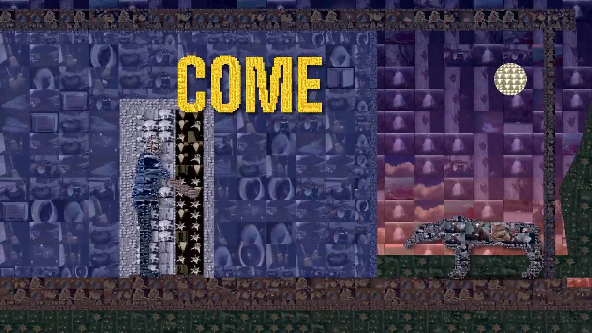

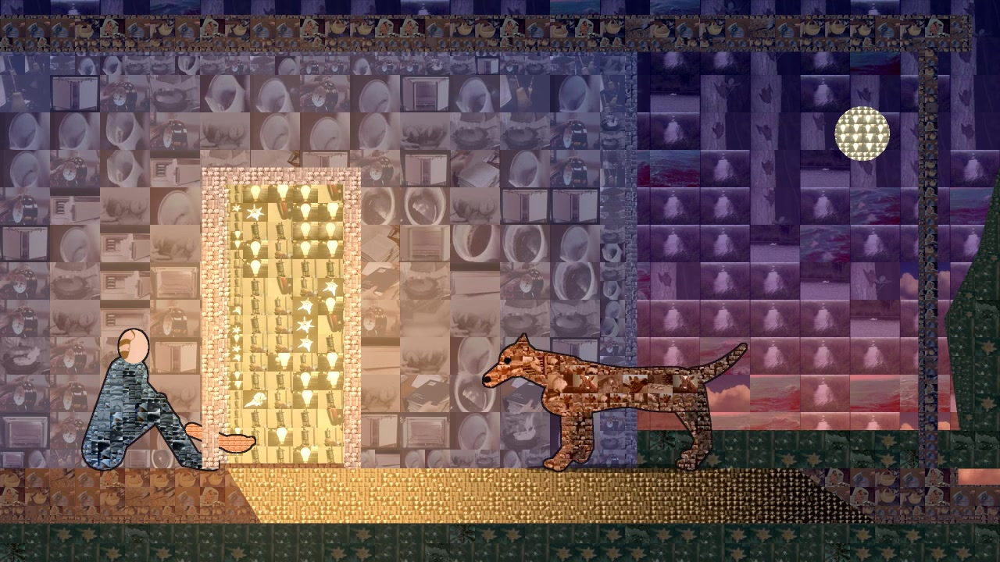
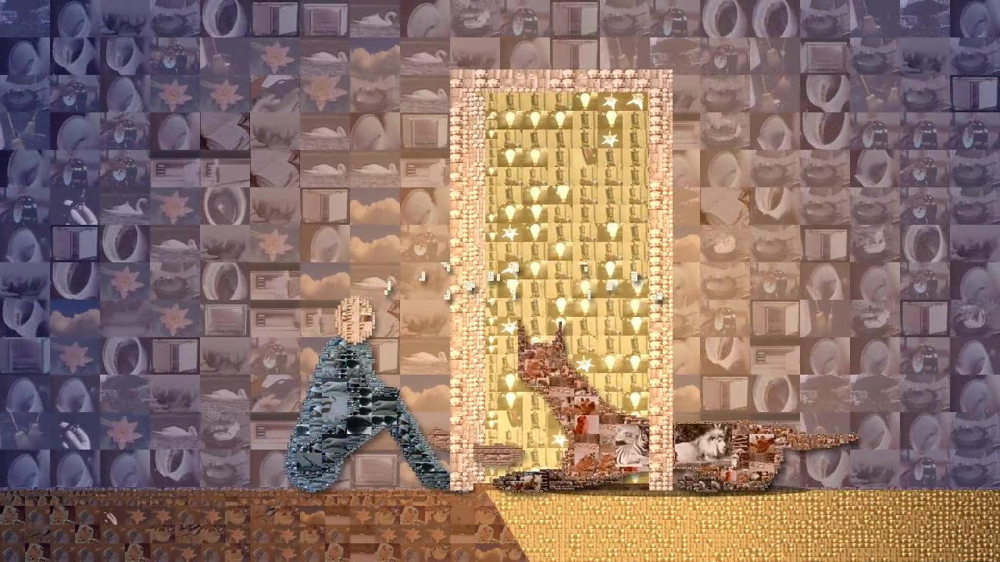
Measured from this swarm's own render (its trace) by check_handmade.py. The score's time, then the time the choice appears.
Each round is a fresh agent that sees the film, the brief and this swarm's SCION prompt, never the builder's notes, and returns a verdict and falsifiable repairs. Stopped at an independent pass.
# SCION 04 · critic round 1 · PASS (narrow) Independent critic (fresh agent; frames every 0.5 s plus dense windows, full resolution, frame-to-frame difference in a dog crop; verdict from the picture before any builder notes). Per choice: backing away reads (crouch, head low, moves away; the wall tiles turn to trumpeters and alarms under the call); turned back reads (end-on box at 3.6–4.2, lies facing away); turning to look reads (rises ~7.5, facing flips 8.25–8.5 with the score's turn; end-on frame like a giraffe); coming head low weak (head near level; an unmotivated change from brown to bright orange cartoon fill at ~17–20); lying across the sill reads; looking in weak (reads as "looks up", not into the door). Reads as a dog throughout. Boil: mild (mean frame difference 6–7/255 in a dog crop). Legible, not noise; too calm for Mouris. Bottom-up: partly. Every surface is a quadtree of real archive tiles with meaningful subjects (animals for the dog, bulbs for the door, household objects for the wall, which switch with the words). But the dog's shape is a parametric silhouette with a drawn outline and eye; the tiles are a fill tinted until the images mostly disappear; the end card's "no figure is drawn" is not quite true; few rhythmic slots, holds or changes of cut speed. Different from PAE-00 in material, not in staging. Craft: end-on views read as a table or a giraffe; unmotivated colour change; flat pink hand; dog tiles unreadable at playback size; tiny title line. Sound follows events. Rights: 55 public domain, self-made, OFL fonts, one CC BY 4.0 entry; all clip_ids in found-frames.json. Repair conditions (ranked): 1. 14.7–23.8: head clearly below the shoulder line (frames every 1 s). 2. 26.6–27.5: the head turns toward or into the lit doorway, not only upward. 3. At least two of the dog's tiles recognisable as archive images at any moment (larger flank tiles, less colour shift); three full-res frames as proof. 4. Remove the drawn outline and eye and let tile edges carry the silhouette, or correct the "no figure is drawn" claim. 5. Two deliberate holds and one burst of fast cuts timed to the choices (e.g. 3.42, 23.79), visible in a frame-difference plot; the colour change follows the score's trust.
# SCION 04 · critic round 2 · PASS (narrow) Fresh independent critic (all 768 scene frames at full resolution and zoomed into the dog, frame-to-frame difference measured, sound per window; judged before reading round 1). Per choice: backing away reads (head low, slides away, a burst of change over the span); turned back reads, slightly weak (flips at 3.42–3.50 with a burst exactly at the choice; head hard to make out in the crouch); turning to look reads (rises 7.50, facing flips 8.17 with the score's turn; no cut accent at 7.46); coming head low weak (head only slightly below the back until ~22 s); lying across the sill reads (drops at 23.79 with a burst; the jamb splits the body, front in the light); looking in and staying reads (head turns end-on into the lit doorway, ears from behind, 26.5–28.2; settles and holds). Bottom-up: mostly yes. No line is drawn; the dog's edge is tiny archive tiles; recognisable pictures on the flank (cats, lion, giraffe, the real dog); the words typeset in tiles; cut rhythm follows the choices (bursts at 1.0, 3.42, 23.79; holds at 9–14 and 29–32 s; boil on twos). Remaining gap: the shape is a computed mould the torrent fills, and the flank pictures sit in a rectangular strip. Made of the torrent in material and rhythm, not yet in form. Round-1 conditions: 1 partly met (head low only from ~22 s); 2, 3, 4, 5 met. Remaining (recorded, not pursued: stopped at an independent pass per the SCION doctrine): head below the withers from 14.7; a cut accent at 7.46; break the rectangular flank strip so pictures of mixed sizes run into the legs, head and edge; the jamb breaks the outline at 22–24 s; the person's face is a featureless disc.
method · every asset and its rights · ledger of attempts · build · the prompt
Depth, fog and focus decide what the dog can see, and what we can.
About twenty glass planes at measured depths: sky, trees, the room, the door, the house front, floors, posts and weeds; six fog layers keyed from public-domain time-lapse cloud footage; a bowl inside the room cut from the home movie. The dog is a library of hand-cut replacement pieces (five body views, crouch and lying stages, heads per view and ear state, leg segments, paws, tail), each traced once from a maquette, given a scissor edge and painted with the archive dog's coat grain.
Moved byA camera that pans, drops and moves in, so parallax comes from real depth. The fog acts in four states: it thickens between door and dog, is drawn toward the door light, parts along the dog's path and hangs still. Focus is an event: it pulls into the room when the door opens and when the dog is told come in. The dog's pieces are chosen and hinged each frame and laid far to near on its own plane.
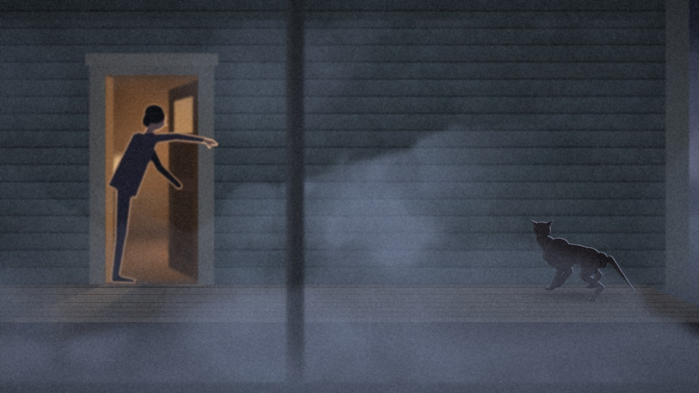
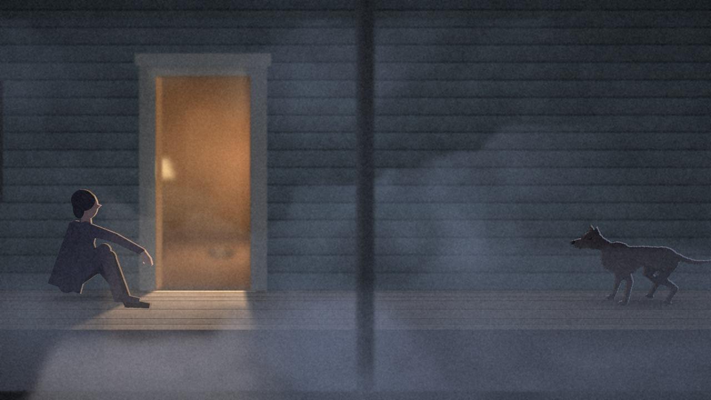
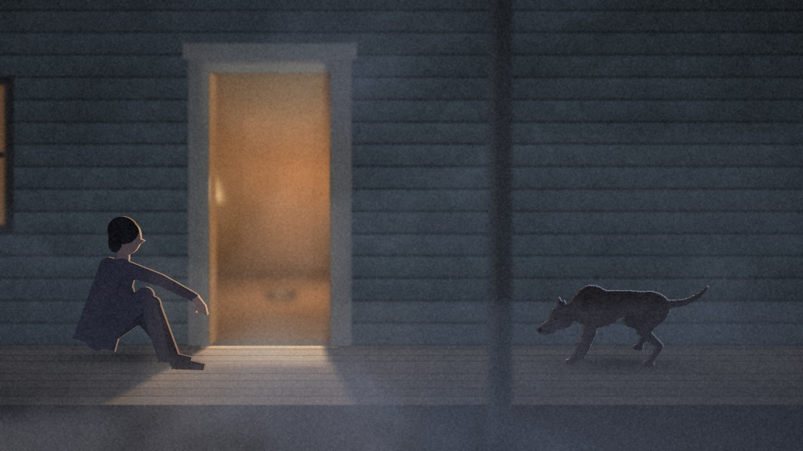

Measured from this swarm's own render (its trace) by check_handmade.py. The score's time, then the time the choice appears.
Each round is a fresh agent that sees the film, the brief and this swarm's SCION prompt, never the builder's notes, and returns a verdict and falsifiable repairs. Stopped at an independent pass.
# SCION 05 · critic round 1 · DOES NOT PASS (close) Independent critic (fresh agent; frames every 0.5 s plus dense windows, full resolution; verdict from the picture and sound before any builder notes). Per choice: backing away reads (crouches facing the door, drifts away; hindquarters smear to a lump 1.6–2.3); turned back reads (front-on 3.62–3.70, clearly a dog; away by 3.79; lies facing away from 4.5, the fog thinning it to a faint lump at 7.0–7.3); turning to look weak, late (rises at 7.54 as a headless lump, muzzle up and away 7.9–8.2, head to the door only ~8.5: the "rise that still faces away"); coming head low reads; lying across the sill reads, modestly (sphinx-low by 24.0, head and forepaws in the door light, rear and tail out; part-in by overlap); looking in weak (the head turns to face the camera, a cat-like mask; the focus pull from the dog to the bowl inside carries the "looking in"); staying reads. The fog mostly dramatizes the choices (it thins as the dog commits from 15 s; the focus pull at 27 is a real event) but hides the turn at 7.0–7.6 exactly when it has to read. Language: genuinely layered: painted planes at depths, parallax on the posts and doorway, drifting ground fog keyed from archive cloud footage, door light through the fog, focus as an event. Fundamentally different from PAE-00. The weak point is the dog: a procedural 3D maquette flattened to a silhouette each frame, moving like a rig rather than like Norstein's hand-made replacement pieces. Defects: the pan pushes the person sitting (5.4) and the door opening (6.2) to the frame edge; the cat-like front-on head; lumpy hindquarters. Sound follows events; soft voice 9–11 dB under the calls, ~9 dB above room tone. Rights clean. Repair conditions (ranked): 1. 7.46–7.71 the head comes round to face the door and keeps facing it through 8.5; no headless lump 7.46–7.8; the fog thins at the dog by 7.4. 2. 26.4–26.9 the head turns into the lit doorway (away from the camera), with the focus pull following the turn. 3. During the refusal the dog stands or sits rather than lies. (Coordinator's note: not passed on; the score's own acting has lie = 1 from ~6 s in the refusal, so lying there follows the score.) 4. The person sitting (5.4) and the door opening (6.2) fully on screen. 5. The hindquarters keep their leg shapes through 1.4–2.3 and 7.5–7.7.
# SCION 05 · critic round 2 · DOES NOT PASS (narrowly) Fresh independent critic (all 768 scene frames; full-resolution zooms on both turns and the look-in; judged before reading round 1). Per choice: backing away reads (crouches facing the door, drifts away; the hindquarters collapse into a dark lump 1.25–2.42); turned back reads (back view 3.58, three-quarter 3.67, away by 3.75 with a ghost of the tail; lies facing away ~4.7–7.46, as the score asks); turning to look reads (rises 7.54, the muzzle round to the door by 7.67, held through 8.79; the body turn holds as a three-quarter dog); coming head low reads; lying across the sill reads (sphinx-low by 24.2, head and forepaws inside the jambs in the door light, rump and tail out); looking in weak (at 26.46 the head swaps to a two-eared chin-up head pointing up-left at the top of the door and the light, not away into the house; the focus pull to the bowl carries "looking in"); staying reads. A dog in every frame, deliberately fogged or out of focus at times. Language: the world is (painted planes at depth, parallax, archive-keyed fog, focus as an event). The dog is half there: in the close shots (23–32) it shows hard cut edges and seams and reads as articulated cut-outs; in the walk (15–23) it moves smoothly frame by frame, like a rig. assets.json still describes re-projection from an ellipsoid maquette every frame. Defects: the hindquarter lump 1.25–2.42; a hind-leg tangle 7.54–7.63; a two-silhouette ghost at 3.75; the person sits in mid-air 5.8–6.1; audio peaks at −0.8 dBFS on the second call. Soft voice ≥8 dB under the calls, ~8 dB above room tone. Round-1 conditions: 1 met; 2 not met; 4 met; 5 partly met. Repair conditions (ranked): 1. 26.4–26.9: the head turns into the doorway away from the camera, back of the head and ears to the viewer, no face to the camera, held until the focus pull at 27.0. 2. 1.25–2.42: both hind legs legible as separate legs, no lump at the rump. 3. 15–23: the walk moves like replacement pieces, not a rig (e.g. drawings held on twos with visible piece seams, as in the close shots).
# SCION 05 · critic round 3 · PASS Fresh independent critic (all 768 scene frames, contact sheets every 0.5 s, full-resolution crops of every window; judged before reading rounds 1 and 2). All six choices read: backing away (ears flat, crouch at 1.04, drifts away facing the door); turned back (front view 3.67–3.71, away by 3.79, lies facing away ~4.75–7.46 as the score asks; every turn frame a dog); turning to look (ears up 7.54, head over the shoulder to the door by 7.71–7.75 and held; body turns 8.46–8.62); coming head low (below the back 14.75–23.5); lying across the sill (sphinx-low by 24.5, head and forepaws in the door light inside the jambs, rump and tail out); looking in and staying (the back of the head and both ears into the house 26.67–26.92, no face to the camera; the focus pull to the bowl follows; settles and stays). A dog in every frame. Bottom-up: painted planes at depth with parallax; layered uneven fog with the door light through it; focus changes as events; the dog now hand-cut replacement pieces through the walk, each drawing held on twos with visible seams and edge highlights; the calls panned toward the person. Round-2 conditions: 1 met; 2 mostly met (a soft dark patch where belly meets rump); 3 met. Remaining (optional, not pursued: stopped at an independent pass per the SCION doctrine): the back-of-head piece a little cat-like; the dark belly patch at 1.5–1.9; hard black crescents under the fog at 0–6 s; the defocus at 6.4–7.0 blurs the whole frame evenly. Soft voice ~10 dB under the calls, ~6 dB above room tone; peak −2.3 dBFS.
method · every asset and its rights · ledger of attempts · build · the prompt
Trust is a fifth: the dog comes when its breath locks to the house.
Only computed points of light. A 3D skeleton whose proportions are the archive dog's measured rig keys; every part a tube of meridian dot-lines with its own harmonic number, winding into helices and unwinding into straight engraved lines every 8 s. The house, the room, the hearth and the person are point-lines too; the moon is a Lissajous trail of the two oscillators.
Moved byThe house pulses at 0.40 Hz and the dog breathes near 0.6 Hz. The calls detune the dog, so its lines go ragged and the moon smears; once the circumstances change the two oscillators couple and lock in a 3:2, and the dog's lines stand straight. The gait is a phase relation driven by distance travelled; the turns are true rotations; the sound is the same oscillator bank, a pure fifth when locked.
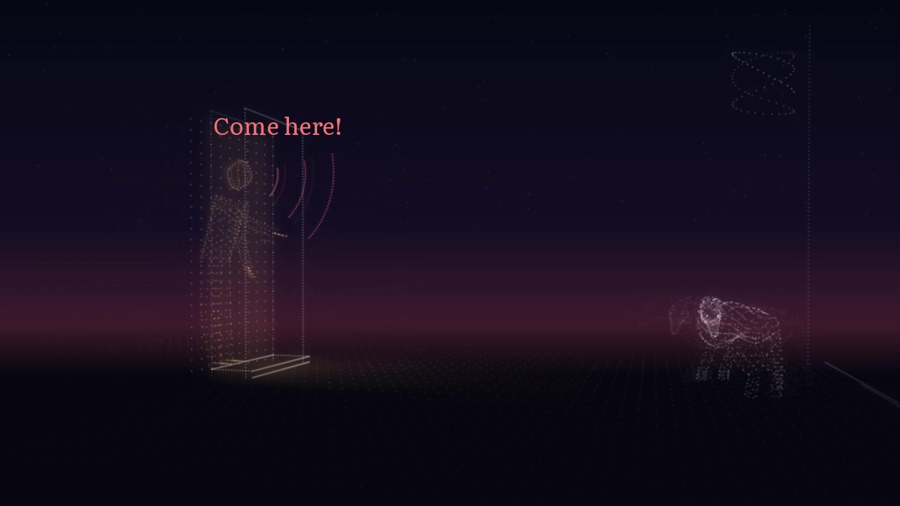
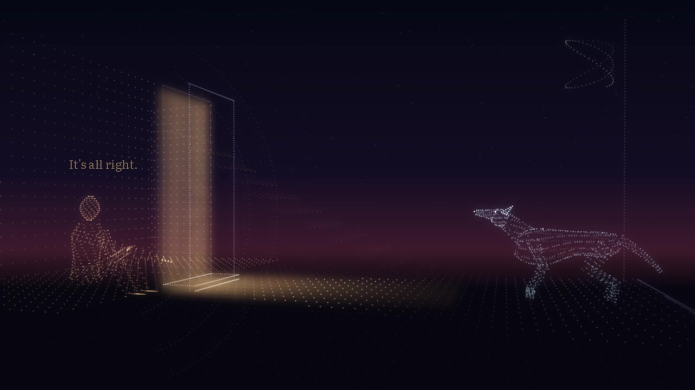
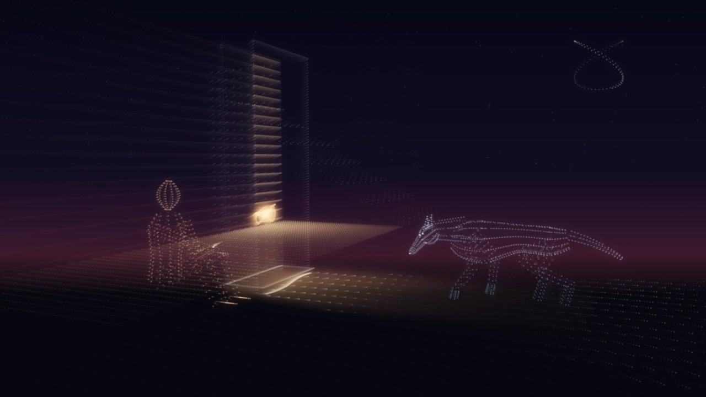

Measured from this swarm's own render (its trace) by check_handmade.py. The score's time, then the time the choice appears.
Each round is a fresh agent that sees the film, the brief and this swarm's SCION prompt, never the builder's notes, and returns a verdict and falsifiable repairs. Stopped at an independent pass.
# SCION 06 · critic round 1 · DOES NOT PASS (close) Independent critic (fresh agent; every frame extracted, contact sheets and crops, spectrogram; verdict from the picture and sound before any builder notes). Per choice: backing away reads (crouch, drifts away facing the door, head low; voice rings push from the person); turned back reads (a real 3D yaw 3.46–3.80, three-quarter mid-turn not a tangle, lies facing away 4.6–7.4, faint at the dim right edge); turning to look reads with weak frames (head comes round 7.55–7.88 on time; 8.05–8.26 the torso goes upright and a hind leg flings out, kangaroo-like); coming head low reads; lying across the sill weak (a real lie, but the doorway is a light slab seen almost edge-on, so inside and outside are not legible); looking in weak (the head rises into the light column pointing up-left: "looks up into the light"). A dog in every frame except 8.05–8.26. Language: bottom-up, unlike PAE-00: every figure is points on parametric helical meridians over a skeleton. The structure is heard clearly (detuned glides under the calls, a locked pulse train from ~7, a sparse-dense-release arc). In the picture it barely shows: the development lives in a ~100 px Lissajous moon in the corner; the dog, the porch and the field show no visible phase development, and 9–14 is visually static. The numbers carry the story in the sound and an inset, not yet in the choreography. Defects: the rising twist; ambiguous doorway geometry; long dark low-contrast stretches; the oscillator bed swells as loud as the soft voice between lines (may mask it). Soft voice ~10 dB under the calls. Rights clean. Repair conditions (ranked): 1. 26.6–28.0: the muzzle visibly points into the depth of the lit doorway, not up. 2. 25–31: a distinct interior (lit floor or back plane) behind the door frame; head and forelegs beyond the frame line, hindquarters and tail on the porch. 3. The detune and lock visible in the main field, not only the moon: dog meridians, porch lattice or light pulses drift out of phase during the calls (1–5) and lock visibly after the door opens (7–12). 4. 7.9–8.4: no upright torso or free-flung hind leg. 5. In each soft-voice window the 1–3 kHz band ≥6 dB above the bed in the 0.5 s before (duck the bed). Keep: the 3D turn, the head-low approach, the voice rings, the sound arc, the Lissajous moon as an addition.
# SCION 06 · critic round 2 · PASS Fresh independent critic (all 768 scene frames, contact sheets and full-resolution crops of the turns and the sill, audio per 0.5 s and in the 1–3 kHz voice band; judged before reading round 1). All six choices read: backing away (crouch, head low, drifts away facing the door; voice rings push from the person); turned back (a real 3D turn 3.50–3.80, the back shown by 3.83, lies facing away 4.6–7.5, dim at the edge); turning to look, with weak frames (head round to the door at 7.58–7.62; a limb sticks out in mid-air 7.9–8.2; end-on as an upright column 8.3–8.4, a yaw not a tangle); coming head low (nose below the back from 15.2, legs stepping); lying across the sill, murky (head between the jambs in the light, hindquarters and tail on the porch; not wholly inside; a lit interior floor and lamp behind the frame); looking in and staying (back of the head to the camera, muzzle into the lit doorway 26.75–28.2; settles 28.6). Inside/outside legible, depending on the lit floor plane; busy where the dog's head overlaps the seated person. Language: bottom-up; points on helical dot-lines over a skeleton. The numbers clearly drive the sound (detuned calls, a locked pulse, a sparse-dense-release arc). In the picture the moon shows the phase, and the dog's own dot-lines go ragged under the calls and clean and parallel once locked; the planks and the light carry nothing visible. Perceptible, but subtle. Round-1 conditions: 1, 2, 5 met; 3 met at the minimum (in the dog's lines only); 4 partly met (no kangaroo rise, but a limb in mid-air). Remaining (optional, not pursued: stopped at an independent pass per the SCION doctrine): no limb ending in mid-air 7.9–8.3; the porch lattice or the door light visibly de-phasing and locking; dark caption ghosts in the fades; the end card's fonts line overlaps the Lissajous; the first 7 s long and dark.
method · every asset and its rights · ledger of attempts · build · the prompt
The door's outline is lifted off the door and laid on the porch as the light.
Contour keys drawn as coordinates: 16 body keys and 10 head keys, each stroke with a fixed point count so that point i is the same place on the dog in every key. The archive dog was studied for proportion, not traced; the person, the house, the door and the dusk are drawn the same way.
Moved byIn-betweens are weighted blends of corresponding points, paced to the score; turns pass through drawn rear and front views where a symmetric key swaps its correspondences. Shapes change as consequences: the caller swells and the reaching arm is drawn long; the refusing dog closes into a curl; the door's outline is carried out onto the boards as its light.
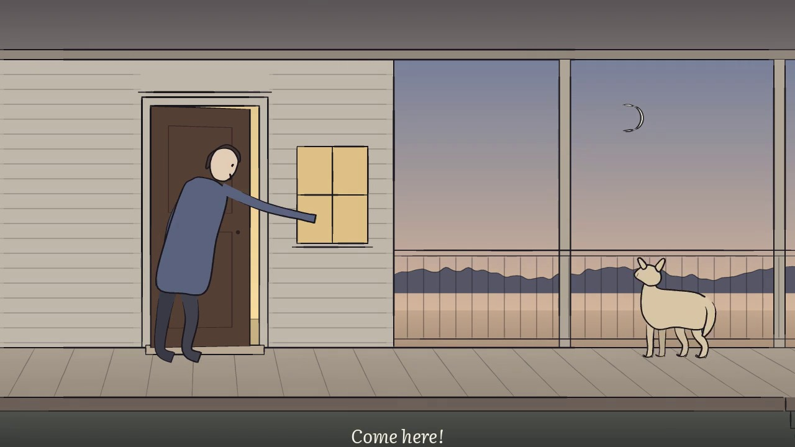
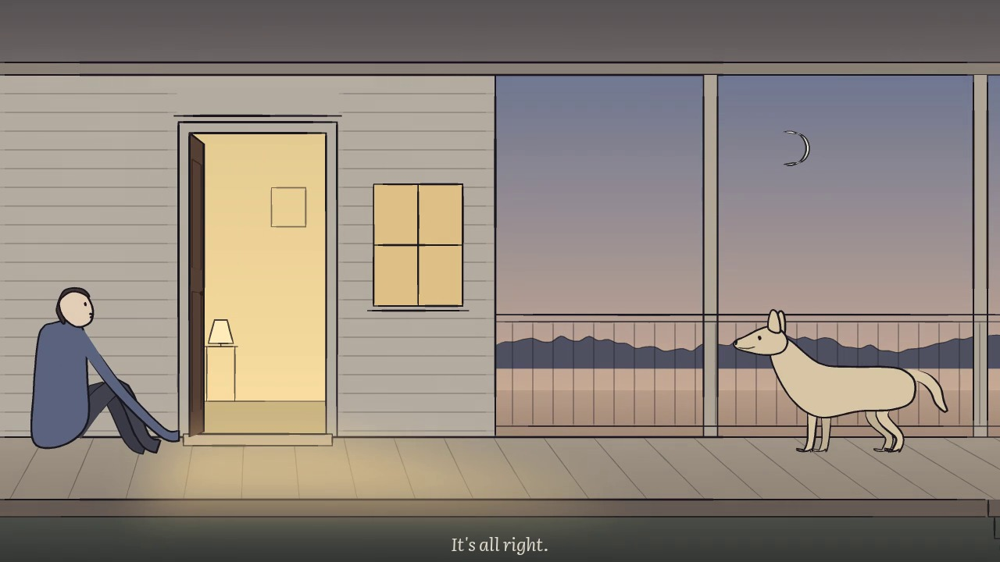
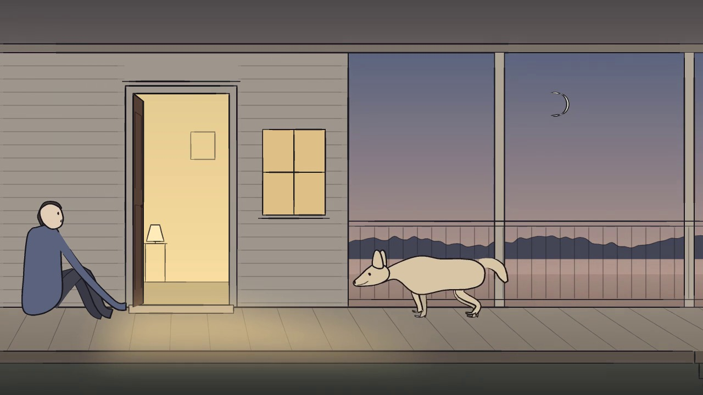

Measured from this swarm's own render (its trace) by check_handmade.py. The score's time, then the time the choice appears.
Each round is a fresh agent that sees the film, the brief and this swarm's SCION prompt, never the builder's notes, and returns a verdict and falsifiable repairs. Stopped at an independent pass.
# SCION 07 · critic round 1 · DOES NOT PASS Independent critic (fresh agent; all 768 scene frames; verdict from the picture before any builder notes). Per choice: backing away reads (crouch, ears flat, head low, drifts away facing the person; the crouched body looks rat-like); turned back reads (rear 3/4 3.54 → rear 3.75 → away 4.125, folds down facing away); turning to look does not read on time (rises at 7.46 but the head still points away 7.58–8.25; comes round ~8.33–8.5, ~0.9 s late); coming head low reads (muzzle at or below the back line, plausible planted paws); lying across the sill reads (forelegs out flat, head and forelegs inside the frame, tail outside); looking in weak (reads as "looks up and away"). Not a dog in every frame: at 8.375 the drawing breaks apart (floating head on a stick neck over leg stubs, no body); 8.33 a ball; 3.833 a narrow sliver; the lying shapes read as a rat or guinea pig. Bottom-up: mostly yes. Drawn line work, contours moving point to point between drawn views; the door's outline carried out onto the boards as the light is a real metamorphosis. But the in-betweens do not hold the dog's shape at the front view (8.29–8.42), against the bar's "no unintended topological flips". Fundamentally different from PAE-00. Craft: the collapse at 8.375; rodent-like lying silhouettes; the end card's "kept at their times" untrue for 7.46; a head-shape dissolve at 1.08–1.25. Sound lands on events; soft voice ≥10 dB under the calls, above room tone. Rights clean. Repair conditions (ranked): 1. t=7.46–7.71: the head turns to face the door before or while it rises; not still facing away at 7.75. 2. t=8.25–8.50: every frame shows one closed body outline joined to the head and four legs; redraw the front-view in-between by hand. 3. t=26.4–27.0: the head turns into the lit doorway (muzzle or eye-line inside the frame), not only up. 4. t=4.5–7.4 and 24–31: the lying dog reads as a dog (defined head and muzzle, ears, a dog's tail, a back line, not a dome). 5. t=3.83: the rear view keeps a dog's width (haunches and tail), not a sliver. Keep: the refusal turn, the head-low approach with stepping paws, the lie across the sill, the door outline becoming the light, the sound mix.
# SCION 07 · critic round 2 · PASS Fresh independent critic (all 768 scene frames, contact sheets, every frame in the turn windows, full-resolution zooms; judged before reading round 1). All six choices read: backing away (crouch at 1.04, ears back, drifts away facing the person, feet stepping); turned back (rear 3/4 3.54, full rear view with haunches and tail 3.62–4.0, low and facing away to 7.42); turning to look (the face comes round at 7.50 while still crouched, front view 8.0, faces the door 8.125; the head never points away after 7.5); coming head low (muzzle below the back line from 14.79, paws stepping); lying across the sill (legs fold 23.9–24.2, flat, forelegs out, head and forelegs inside the lit frame, tail out); looking in and staying (back of the head into the lit doorway 26.6–28.2, chin on paws by 28.5). A dog in nearly every frame; every frame of both turns holds. Bottom-up: hand-authored key contours with point correspondences and in-betweens; the archive dog only looked at for proportion; the door's outline growing onto the boards as light is a real metamorphosis. Rights clean. Round-1 conditions: 1, 2, 3, 5 met; 4 met at 24–31, partly at 4.5–7.4. Remaining (optional, not pursued: stopped at an independent pass per the SCION doctrine): the cowering key at 4.3–7.4 and 1.25–2.4 is hump-backed with a pointed snout and a knob of a tail, rat-like when cropped alone; the front view at 8.0 is a stiff box.
method · every asset and its rights · ledger of attempts · build · the prompt
THE DOG IS NOT SELECTABLE: the brief's 'understand it, not control it', said in Sketchpad's own terms.
Points, lines and arcs on a simulated phosphor vector display. The dog is a 24-point graph under 77 hard constraints (bone lengths, joint sides, floor contact, and the threshold itself), its proportions the archive dog's measured bones; nothing else is borrowed.
Moved byA real iterative solver, warm-started every frame, with its residuals on the console. The prompts are light-pen drags: the reach pulls the hand toward the dog until the console says HAND GOAL UNSATISFIABLE. The dog cannot be dragged at all.
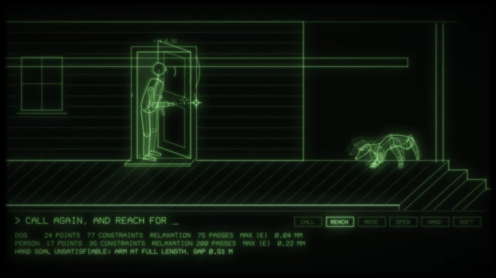

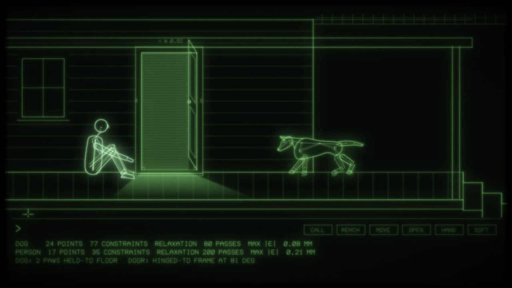
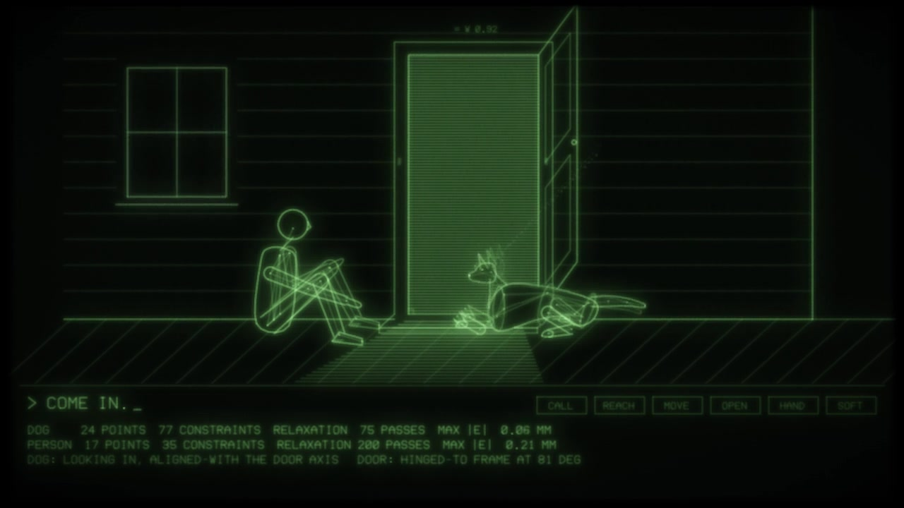
Measured from this swarm's own render (its trace) by check_handmade.py. The score's time, then the time the choice appears.
Each round is a fresh agent that sees the film, the brief and this swarm's SCION prompt, never the builder's notes, and returns a verdict and falsifiable repairs. Stopped at an independent pass.
# SCION 08 · critic round 1 · PASS (narrow) Independent critic (fresh agent; frames every 0.5 s plus dense windows and full resolution; verdict from the picture before any builder notes). Per choice: backing away reads (ears flat, crouch, tail tucked by 1.1, moves away facing the door); turned back reads but slow (edge-on tangle 3.8–4.2; back clearly turned ~4.3); turning to look weak (rises on time, head reaches the door ~8.6; heron-like edge-on frames 8.1–8.45); coming head low reads (wary rather than humble); lying across the sill reads (head and forelegs inside the jambs in the light, haunches and tail out); looking in reads quietly (head lifts, ears prick, dotted sight line). Reads as a dog in profile. Bottom-up: yes. Every mark a solved point, line or arc on a simulated phosphor display; the reach is a light-pen drag with an unsatisfiable goal; "THE DOG IS NOT SELECTABLE" puts the brief's "understand, not control" in Sketchpad's terms. Console text helps, does not replace the picture. Weak point: turns are a flat mirror flip, not a constrained rotation. Craft: edge-on collapse in turns; soft voice not quieter than the call (−16.1 vs −14.0 dB); phosphor trails ghost the person at 26–28; dim detail legible at full size; no flicker. Rights: clean (no source pixels; bone ratios measured from PD rig keys). Repair conditions (ranked): 1. t=7.46–7.80: the head swings to face the door before or while it rises. 2. t=3.42–3.90: back fully turned; no frame 3.8–4.2 loses a readable head, spine and tail. 3. t=8.1–8.45: turn frames show a readable foreshortened body, solved as a rotation. 4. t=7.4 and 26.4: soft voice ≥6 dB below the 1.0 s call. 5. t=26.4–27.0: the look-in raises or turns the head distinctly from the resting pose, readable without the sight line.
# SCION 08 · critic round 2 · PASS (narrow) Fresh independent critic (frames every 0.5 s, every frame through both turns, full-resolution crops; judged before reading round 1). All six choices land within ±0.25 s and read at normal speed: backing away (crouched, head low, moving away facing the door); turned back (back clearly turned by 3.96, the reach's dashed "unsatisfiable" line pointing at it); turning to look (weak to reads: head to the door at 7.96, clean profile by 8.04); coming head low (ears back, steady walk); lying across the sill (head and forelegs in the lit opening, haunches and tail outside, a paw-thump at 24.0); looking in and staying (head raised, ears pricked, foreshortened toward the opening 26.75–28.0). Bottom-up: every mark a solved point, line or arc on a phosphor vector display; the console shows the solver at work; the prompts are light-pen drags; "THE DOG IS NOT SELECTABLE" is a strong reading of the bar. Rights clean. Round-1 conditions: 1 partly met (head arrives 7.96, after the rise begins); 2 not met (the knot moved earlier, 3.71–3.88); 3 met for its window (the collapse moved to 7.79–7.92); 4 met (soft voice ~14 dB below the calls); 5 met. Next blocking failure (recorded, not pursued: stopped at an independent pass per the SCION doctrine): about five frames at each turn (3.71–3.88, 7.79–7.92) are a knot of phosphor lines with no readable head, spine and tail. The turns are still a hidden flip, not a solved rotation; the swarm's own bar asks for the rotation. Also: legs held mid-stride when standing still; the soft voice faint against the hum.
method · every asset and its rights · ledger of attempts · build · the prompt
A drawing that bends without ever folding: the dog keeps its shape by solving for it.
Six dog drawings drawn in code: a standing profile, standing and sitting back views, a lying sphinx profile, a profile head with collar and tag, and the back of the head. Each is cut into a triangle mesh, with cuts between the forelegs and at the tail notch, and the eye, nose, tag and buttons weighted forty times stiffer. The moon and trees are Quick, Draw! doodles.
Moved byOnly by an as-rigid-as-possible solver: handles, a best rotation per triangle, one energy minimized per frame; a triangle that flips is stiffened and the frame solved again. Feet come from a stepping simulation, planted or in the air, never slid. Turns swap whole drawings, bent across by the solver, the head leading. Against weighted skinning on the same mesh, the solver folds no triangles where skinning folds dozens.
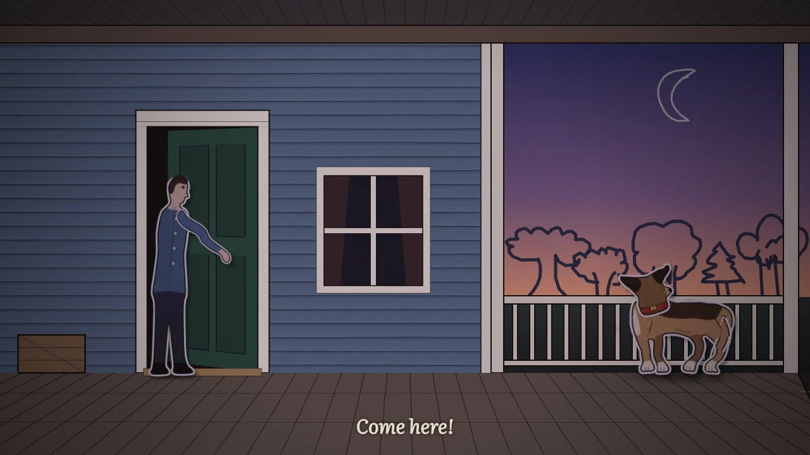
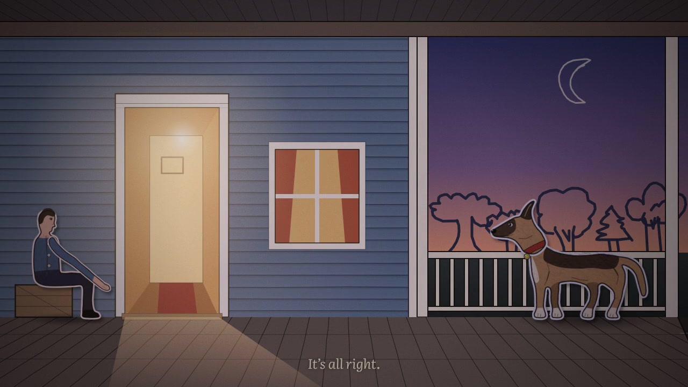
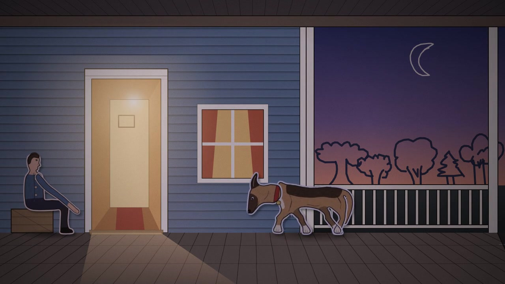

Measured from this swarm's own render (its trace) by check_handmade.py. The score's time, then the time the choice appears.
Each round is a fresh agent that sees the film, the brief and this swarm's SCION prompt, never the builder's notes, and returns a verdict and falsifiable repairs. Stopped at an independent pass.
# SCION 09 · critic round 1 · PASS (narrow) Independent critic (fresh agent; all 912 frames; audio by astats and volumedetect; verdict from the picture before any builder notes). All six choices read: backing away (the arm beckons at 1.00, crouch with ears back, the spine flexes, moves away); turned back (the head bends away at 3.42, a back-of-head piece on the profile body, a rear-standing view at 3.67, sits facing away 4.75–7.42; faces the yard rather than directly away from the person); turning to look on time (a profile head facing the door on the seated rear body at 7.46); coming head low (the neck bends, the head below the back from ~14.9); lying across the sill, weak in depth (front half overlaps the door frame, tail outside, but lying parallel to the facade in front of the jamb: inside only by 2D overlap); looking in and staying (the back of the head toward the lit hall at 26.50, in depth). A dog in every frame; neither turn collapses edge-on. Bottom-up: each view a continuous drawn sheet that bends (the neck curves, the spine crouches), with eye, nose, tag and buttons kept rigid; turns as whole-drawing swaps, which the prompt allows. Unlike PAE-00's hinged pieces: one sheet curves smoothly with no joint lines. Defects: the calls are heard 0.25–0.3 s after the dog reacts (only the gesture is on time); single-frame swap pops with footprint jumps (3.63, 4.71, 8.21, 24.08 with no folding of the legs); a zigzag foldover seam in the near foreleg at 18.33–18.58 and 19.42, against the bar's "no inverted triangles"; the person's trousers balloon and the figure glides without steps, then pops into sitting; the door leaf jumps. Soft voice ~12 dB under the calls, ~9 dB above room tone. Rights clean. Repair conditions (ranked): 1. The onset of each call's voice at or before the dog's reaction (≤1.00, ≤3.42). 2. No foldover seam or zigzag in a leg (18.3–18.6, 19.4). 3. Each swap bridged by ≥2 bent in-betweens, no single-frame footprint change over 40% (3.63, 4.71, 8.21, 24.08). 4. The person steps aside with planted feet and keeps her silhouette; the door leaf does not jump. 5. Lying, part of the dog visibly behind the jamb line rather than only overlapping it.
# SCION 09 · critic round 2 · PASS (narrow) Fresh independent critic (all 768 scene frames on contact sheets; the required windows frame by frame at full resolution; audio onsets measured; judged before reading round 1). All six choices read on time: backing away (crouches, head low, backs away at 1.04; the call heard from 0.90, before the move); turned back (the head turns away at 3.46, a full rear view by 3.67, sits facing away 4.75–7.42; the second call heard from 3.30; it faces the yard rather than turning from the person); turning to look (a side-view head toward the door on the seated rear body at 7.46); coming head low (below the back 14.75 to the sill, legs stepping); lying across the sill, flat (lies at 24.12, front half over the lit opening, tail outside, but in front of the jamb, not behind it); looking in and staying (the back of the head to the viewer from ~26.5). A dog in every frame; neither turn collapses edge-on. Bottom-up: each view one continuous drawn sheet that bends; eye, collar, tag and nose rigid; whole-drawing swaps at turns; no foldovers. Rights: own work. Round-1 conditions: 1 met (calls heard before the reactions); 2 met (no foldover); 3 partly met (3.63 and 24.08 bridged; 4.71 and ~8.17 still single-frame swaps); 4 met (a real stride, the door closes smoothly and opens at 6.2); 5 not met (nothing of the dog hidden by the jamb). Remaining (not pursued: stopped at an independent pass per the SCION doctrine): bridge the 4.71 and 8.17 swaps; let the jamb hide part of the lying dog so it is inside in depth; begin the lowering within 0.25 s of 23.79. Soft voice ~11 dB under the calls, above room tone.
method · every asset and its rights · ledger of attempts · build · the prompt
The fewer drawings it has, the more each choice of drawing says.
Biscuit: about 25 flat construction-paper pieces cut in code, each with a fixed scissor wobble so it looks the same every frame; three body views, five head views, a standing and a lying drawing, and an atlas of eyes, brows and ears. Maren, the person, has one view, stand, crouch and sit postures and a ten-drawing mouth atlas. Five Quick, Draw! doodles make the moon, trees and fence. Original designs, not the show's.
Moved byEvery turn or change of posture is a swap to another whole drawing, held on twos, never squashed; the head is turned separately from the body and leads it. Paws are put down and stay put; one list of timed sounds drives her mouth and her voice. The limited animation does the acting: a held sulk, eyes rolled up on the approach, one back-of-head drawing for looking in.
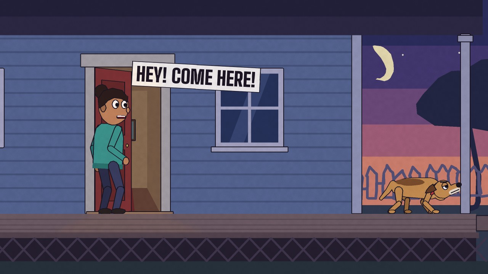
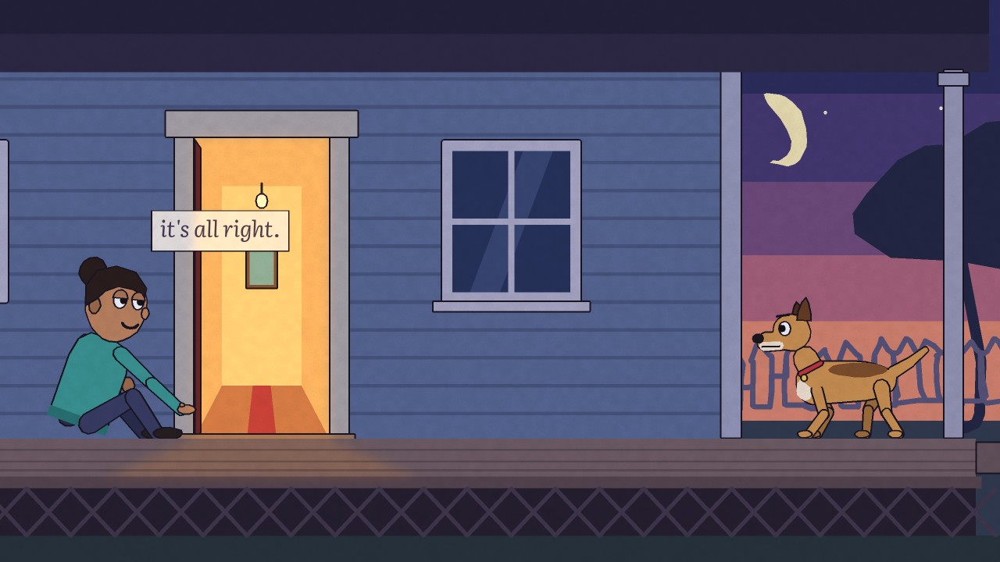
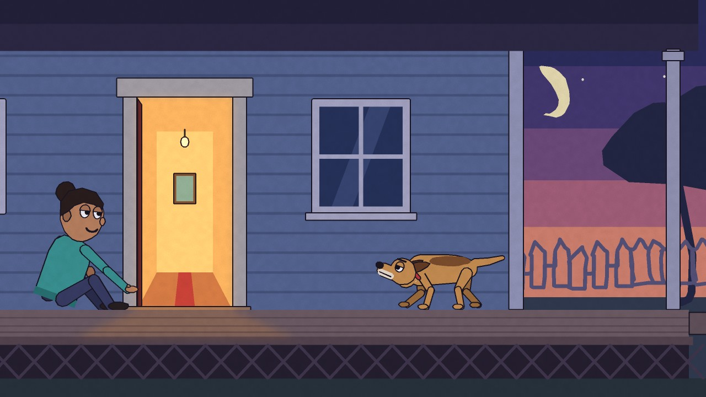

Measured from this swarm's own render (its trace) by check_handmade.py. The score's time, then the time the choice appears.
Each round is a fresh agent that sees the film, the brief and this swarm's SCION prompt, never the builder's notes, and returns a verdict and falsifiable repairs. Stopped at an independent pass.
# SCION 17 · critic round 1 · PASS Independent critic (fresh agent; 0.5 s sheets and 24 fps crops of both turns, the walk, the lie-down, the cut and the look-in; verdict from the picture before any builder notes). All six choices read on time: backing away (crouch facing the caller, moves away under the first call); turned back (drawings swap profile → three-quarter → front → profile facing away by 3.55; lies facing away to 7.46); turning to look (the head swaps to front at 7.467 and faces the door by 7.55 while the body still lies away; the head leads); coming head low (skull at or under the back line, ears flat, eyes rolled up toward her; feet on twos, planted, no skating); lying across the sill (sphinx pose by 24.05, head and chest inside the lit opening, tail out on the porch); looking in and staying (back of the head into the light 26.62–27.9, settles 28.2). One dog in every frame: palette, red collar, saddle patch and ears hold across five head views, three body views and the lying drawing; neither turn collapses edge-on. Bottom-up: face-direction states, swapped whole drawings, an expression atlas, mouth shapes on the person, a flat stage, timing on twos and holds; the limited animation does the acting. Strong comic staging; one motivated cut. Rights clean; nothing copies the show (original designs; only the construction-paper look is borrowed). Optional polish (not pursued: stopped at an independent pass per the SCION doctrine): the tail sticks straight out sideways in the front views; the refusal lie pre-spends the final lie-down pose; the dog is small in the wide shot; the approach walk has no paw sound.
method · every asset and its rights · ledger of attempts · build · the prompt
Discipline is what is not rigged: the drawing does the acting, the rig only carries it.
Every drawing written as control points for this film: tapered brush-ribbon lines with fixed pressure, flat colour with a synthesized watercolour wash and pooled edge. A cut-away house with a patterned room, a hearth and a carved door frame; a dusk porch with spiral-canopy trees. The dog is a turnaround and expression sheet: profile standing, crouching and lying, three-quarter rear, rear, and five heads. Original designs, not the studio's.
Moved byViews swap by substitution, on twos; a restrained rig moves only the legs (two-bone, paws planted), the tail and the neck. One push-in to the threshold, with line weight held constant through the zoom. The room stays dim until the door opens, and the light falls from the doorway as a wedge onto the boards.
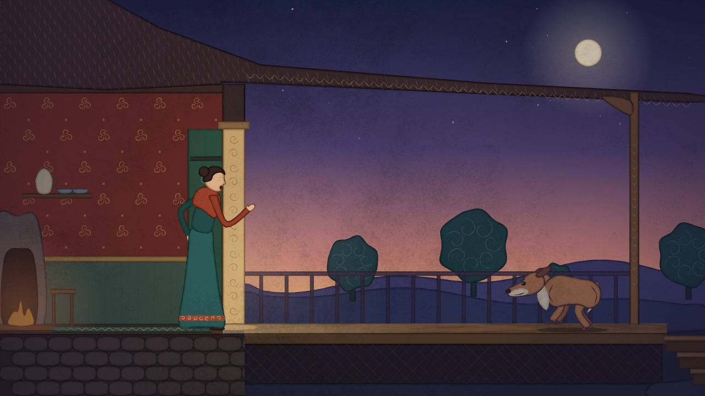
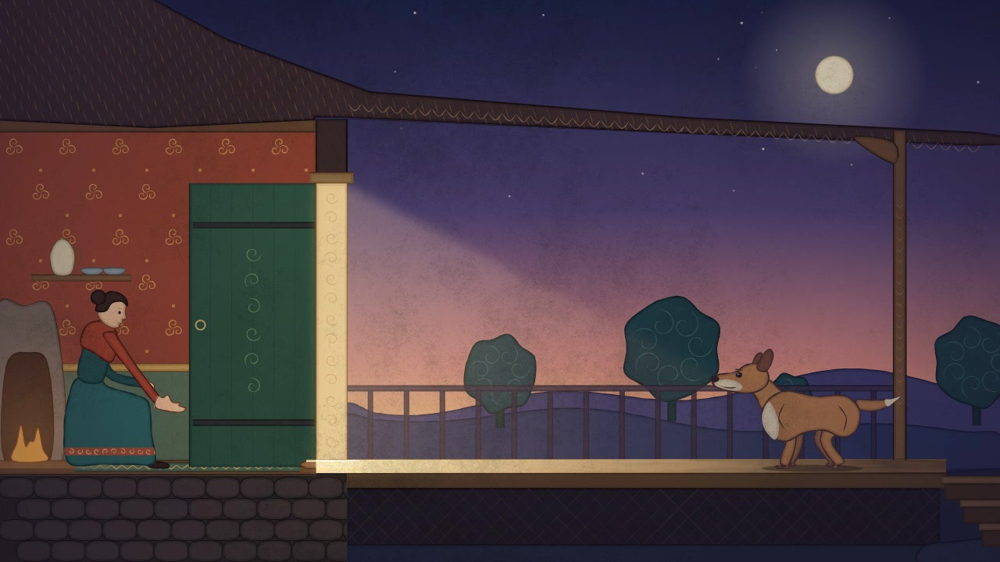
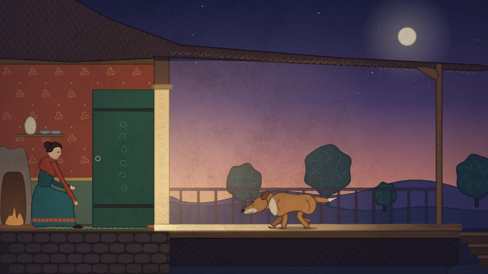

Measured from this swarm's own render (its trace) by check_handmade.py. The score's time, then the time the choice appears.
Each round is a fresh agent that sees the film, the brief and this swarm's SCION prompt, never the builder's notes, and returns a verdict and falsifiable repairs. Stopped at an independent pass.
# SCION 18 · critic round 1 · PASS (narrow) Independent critic (fresh agent; all 912 frames, contact sheets and crops; verdict from the picture before any builder notes). All six choices read on time: backing away (crouch, tail tucked, backs away facing the door, feet stepping); turned back (three-quarter rear 3.625, full rear 3.667, lies curled, rump and tail to the door, head away, 4.6–7.4); turning to look (head round to the door at 7.50; body rises through the turnaround drawings by 8.5); coming head low (below the back line 16–23, eyes half-lidded, feet planted while held); lying across the sill (really lying, forequarters inside the door post, tail outside); looking in and staying (back of the head to the viewer, into the room, 26.7–28.3). Mostly a dog in every frame: the rear view at 3.667–3.708 is a featureless bean; at 8.00–8.21 the tail is drawn on the head side. Bottom-up: authored turnaround drawings swapped by substitution; a restrained rig on legs, tail and neck only; tapered brush outlines, grained painted fills, a patterned interior; no maquette, no photographic pixels. Fundamentally different from PAE-00. Against the lineage: a tube torso on noodle legs, not a strongly designed shape; spidery splayed crouch legs. Defects: (a) tail on the wrong side 8.00–8.21; (b) the door light 6.2–7.2 is a uniform warm haze veiling the porch like fog, not light from the doorway, and the cut-away room is already lit; (c) the rear-view blob; (d) the low hand reads only as a lowered arm in the wide shot. Sound follows events; soft voice ~12 dB under the calls, ~10 dB above room tone. No state labels; end card true. Rights clean; nothing copies the studio's characters. Repair conditions (recommended, not blocking): 1. 8.00–8.21: the tail attaches at the rump, away from the head, in every frame. 2. 6.2–7.4: the light visibly comes from the door opening (a brighter wedge or pool on the sill and boards), not a uniform haze. 3. 3.65–3.72: the rear view shows two hind legs or a head/neck silhouette. 4. From 6.8: the low hand readable at wide-shot scale (open palm toward the dog at about knee height). 5. Optional: the retreat crouch legs not splayed wider than the torso is long.
# SCION 18 · critic round 2 · PASS Fresh independent critic (all 768 scene frames at full resolution; brightness measured across the door's opening; audio per window; judged before reading round 1). All six choices read: backing away (crouch, tail tucked, head down at 1.08; backs away facing the door with stepping feet); turned back (drawing swaps profile → rear with the head peeking → full rear → three-quarter rear away by 3.75; lies curled, rump to the door, ~4.6–7.42); turning to look (head over the shoulder to the door at 7.50; body rises through the turnaround drawings by 8.42); coming head low (below the back line 14.79–23.8, feet step and plant); lying across the sill (down by ~24.2, forequarters in the doorway, rear and tail outside the post); looking in and staying (the back of the head to the viewer, muzzle into the room 26.62–28.0). A dog in every frame (no colour-mask dropout). Bottom-up: an authored turnaround and expression sheet swapped by substitution; a selective rig on legs, tail, neck and the woman's arm; tapered brush strokes over grained washes; a patterned cut-away interior; no maquette, no found pixels. The light comes with the opening: as the leaf swings (6.25–6.75) the room brightens 37 → 66, the porch boards 102 → 120, with a bright pool at the sill from 7.0. Soft voice ~10–14 dB under the calls, ~8–12 dB above room tone; no state labels. Round-1 conditions: all five met. Remaining (optional, not pursued: stopped at an independent pass per the SCION doctrine): the torso still a tube on thin legs; the full-rear drawings tall and narrow; a faint light beam already in the sky before the door opens; the open leaf can briefly read as a closed door behind the dog's head.
method · every asset and its rights · ledger of attempts · build · the prompt
Gaze, head and body are three separate decisions, and the dog makes them in that order.
A parametric rig written from scratch (no Cubism software here): 17 parameter axes in the Live2D style; a head keyform table of 16 yaw by 5 pitch keys over named landmarks, blended bilinearly; body art meshes with saddle, blaze and belly markings on a chain of rotation deformers; eye, brow and mouth controls; the coat studied by eye from the archive dog. The person is a small rig in the same language; the house is drawn in cross-section.
Moved byThe eyes move first, the head two or three frames later, the body last. Both turns pass through a chest-facing view rather than a mirror flip, the head leading; a stepping solver keeps paws fixed until they must step; pendulums drive the tail, ears and tag. The camera zooms about fixed points, with a portrait of the dog while it considers.
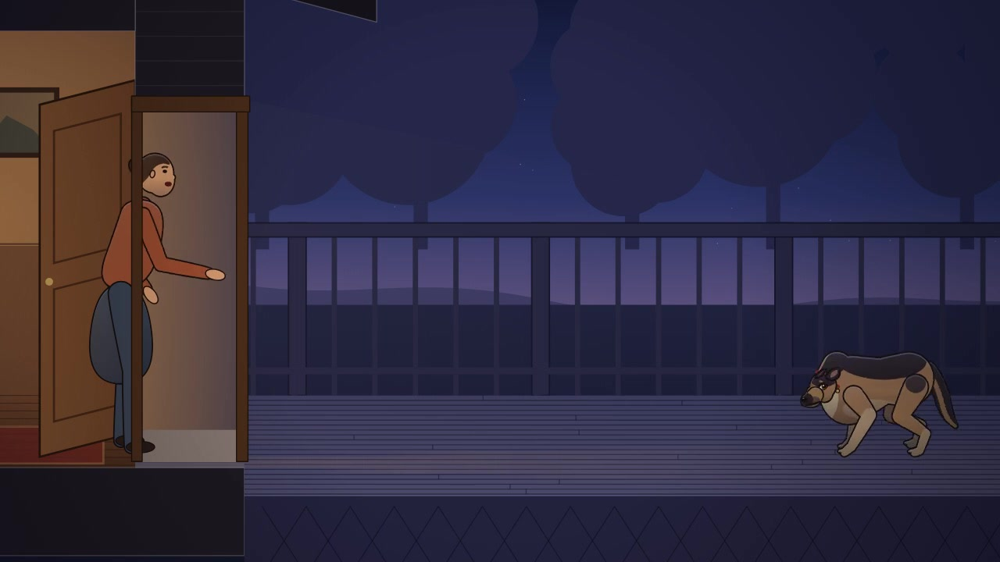
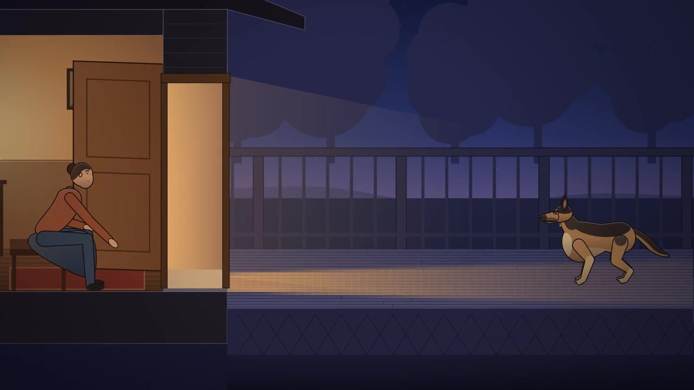
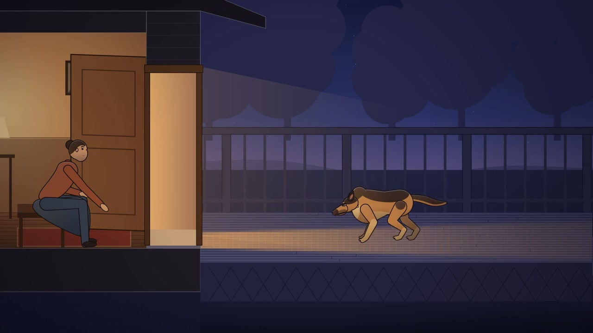

Measured from this swarm's own render (its trace) by check_handmade.py. The score's time, then the time the choice appears.
Each round is a fresh agent that sees the film, the brief and this swarm's SCION prompt, never the builder's notes, and returns a verdict and falsifiable repairs. Stopped at an independent pass.
# SCION 24 · critic round 1 · PASS Independent critic (fresh agent; frames every 0.5 s plus every frame through both turns and the look-in; verdict from the picture before any builder notes). All six choices read: backing away (crouch at 1.04, moves away facing the door, legs moving); turned back (3.54–3.79, rump to the door by 3.79, held to 7.4; lumpy for 3 frames at 3.625–3.708 where the muzzle merges into the chest and the front legs cross); turning to look, the best passage (the head comes round first, frontal at 7.71, over the shoulder 7.79–8.29 while the body still faces away, the body following through a narrow frontal view: gaze and body clearly separate); coming head low (under the back line from 15.0, paws step); lying across the sill (forequarters inside the frame, tail outside, chin on paws); looking in and staying, weak (starts ~26.9, about 0.5 s after the cue; from 27.1 the back of the head to the viewer and the muzzle into the room, a real turn in depth, but the jamb post cuts through the head). Bottom-up, with a caveat: art meshes on deformers, head-angle keyforms, blinks and brows, pendulums on ears and tail; the body squashes like a 2D deformer, not a rendered model with a style on top; plainly not the PAE-00 cut-out. The head keyforms were projected once from a landmark turnaround: a maquette used only as a guide, which the brief allows. The swarm's signature, the head turning in volume, is never shown in its own close-up (10–13.5 is a static profile). Defects: the lumpy frontal turn frames; the look-in half hidden by the jamb; the static close-up; legs held mid-stride while standing; the door opening silent; joint circles visible on the thigh. Soft voice ≥8.7 dB under the calls, well above room tone. Rights clean as declared. Remaining (not pursued: stopped at an independent pass per the SCION doctrine): a ≥30° head turn with the eyes leading in the 10–13.5 close-up; the look-in head ≥80% clear of the jamb, starting by 26.65; clean frontal turn frames; an audible latch at 6.2.
method · every asset and its rights · ledger of attempts · build · the prompt
The film is a pure function of its description: render it twice and every frame is the same.
Real Remotion 4 with React, installed in the folder: the score compiled into a typed manifest, one record per frame, that fails on any missing value; frame-pure React components that draw each frame as SVG from its record alone; a dog of 34 tapered capsules and two ear triangles on a 3-D joint graph, its proportions the medians of the archive dog's rig keys; a matte composition of the same dog for measurement. All sound synthesized as events.
Moved byPosition along the porch is exactly the score's x; a stepping solver keeps each paw fixed until a step carries it; capsules seen end-on are discs, so both turns pass through the face. Ten frames rendered twice give identical hashes. The licence tier for Remotion's free use is flagged for the operator to confirm.
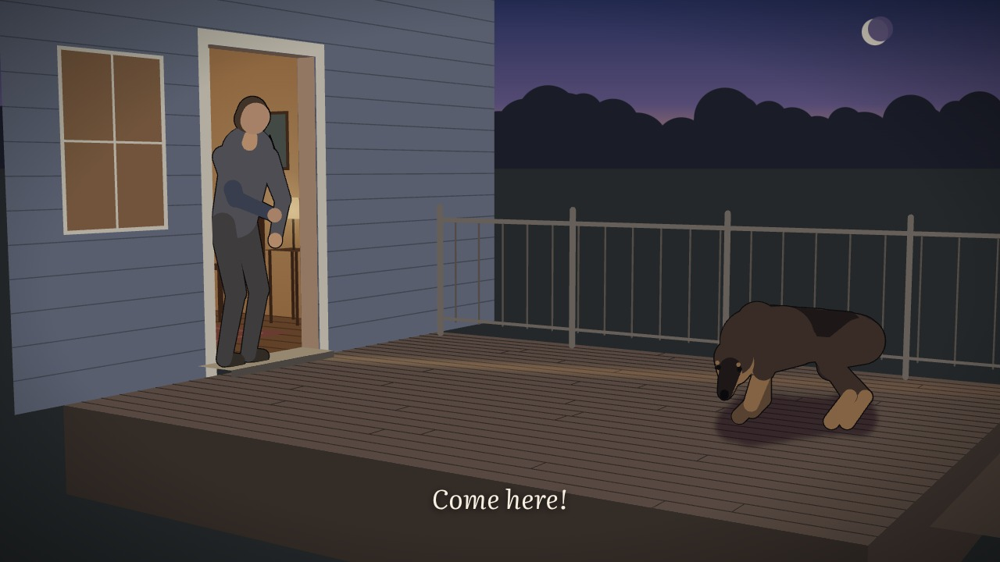
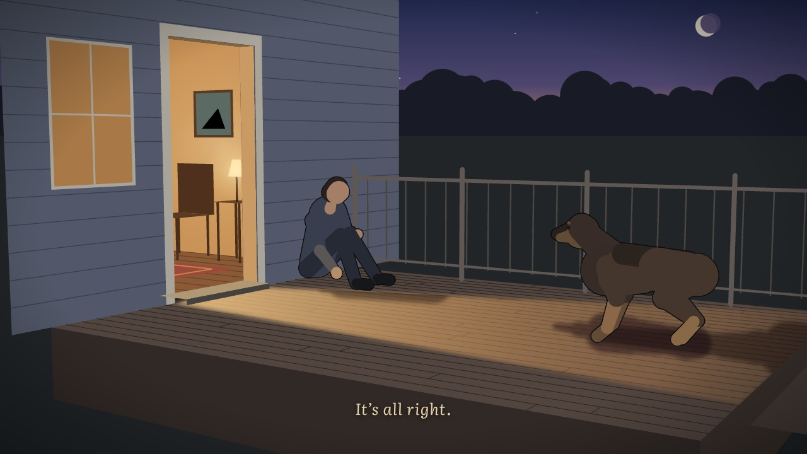
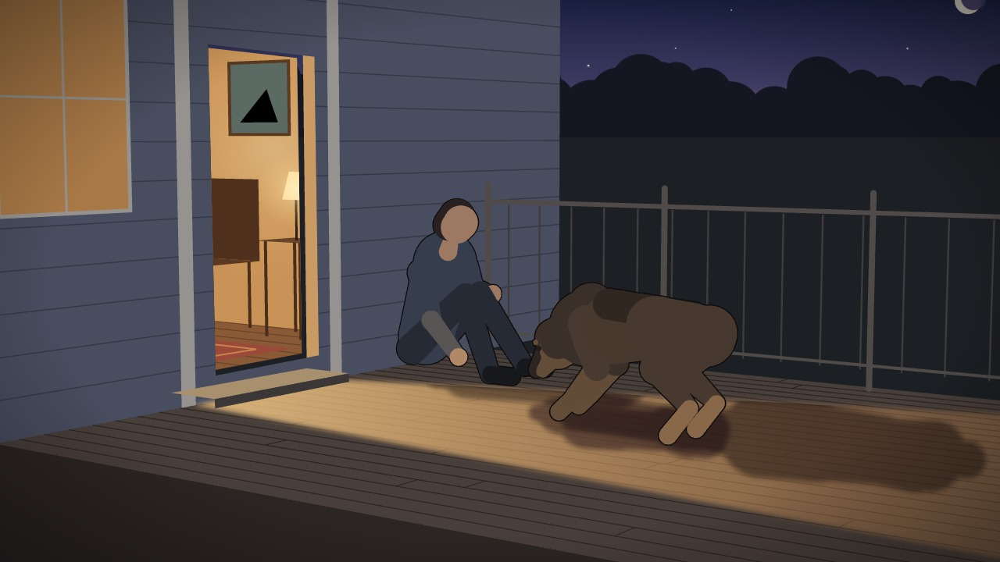

Measured from this swarm's own render (its trace) by check_handmade.py. The score's time, then the time the choice appears.
Each round is a fresh agent that sees the film, the brief and this swarm's SCION prompt, never the builder's notes, and returns a verdict and falsifiable repairs. Stopped at an independent pass.
# SCION 27 · critic round 1 · PASS Independent critic (fresh agent; frames every 0.5 s and every frame in the turn and look-in windows, full-resolution crops; the build inspected only afterwards, to judge the language). All six choices read on time: backing away (crouch facing the door, drifts away; a hunched lump with the head sunk at 1.4–2.0); turned back (a true frontal view 3.62, three-quarter 3.71, faces away by 3.79, lies facing away from 4.5 as the score has it, to 7.4); turning to look (the head swings round at 7.54; one blob frame at 7.71; frontal/three-quarter facing the door 7.79–7.88); coming head low (below the back line ~14.6–23.5); lying across the sill (a true sphinx lie, forelegs and head inside the jamb, hip and tail out on the porch); looking in and staying, in depth (the back of the skull to the viewer, the muzzle into the lit room, 26.5–27.4). A dog in every frame; no edge-on collapse. Language: built bottom-up in the pipeline: a typed manifest compiled from the score, frame-pure React/SVG components, a camera module, seeded randomness, synthesized audio events; no Math.random, Date.now or effects in the source. The dog is a 3-D capsule joint graph, but the capsules are the drawn primitive itself, typed components evaluated per frame, not a guide with a style poured over it: native for a swarm whose language is the pipeline. Its weakness: the look is generic flat vector; the proof lives in determinism and data, not in the image. Fundamentally different from PAE-00. Defects: the approach 14.7–23.8 is effectively silent (~−51 to −58 dB RMS, no audible paws, though the builder reports paw plants as sound events); bulky bear-like hindquarters when crouched and passing the person; blob frames at 1.4 and 7.71; the "Come in." caption nearly illegible; a faceless person. Soft voice ~11–12 dB under the calls, ~25 dB above room tone. Rights: everything made here; Remotion's bundled licence confirms a free tier for individuals, non-profits and companies of up to 3 employees; whether Bolas qualifies needs an operator decision. Reproducibility claimed on one machine only; the lockfile lives only in the git-ignored cache. Remaining (not pursued: stopped at an independent pass per the SCION doctrine): audible paws through the approach; head and muzzle separate from the body at 1.2–2.3 and 7.6–7.8; a readable "Come in." caption; a committed lockfile and a second-machine hash check; an operator ruling on the Remotion licence. Operator ruling (Remotion licence): the operator is an individual, so the free tier applies. Recorded here; no change to the film.
method · every asset and its rights · ledger of attempts · build · the prompt
The cut is the film: every edge of the dog is an argument about where it ends.
A graph cut written for this film (Boykov–Kolmogorov max-flow), seeded but not decided by the kit's SAM masks, with scribbles from the rig keys, a 2× supersampled cut, colour and texture models and a clean plate of the shot with the dog removed. Nine frames of the home-movie dog, cut and saved with contour and failure masks; the woman and door cut from Straight Talk, the hand from The Door to Heaven, the wall and boards from the dog's own shot.
Moved byRe-performance of the cuts: the dog's real walk mirrored and run backward for the retreat and chosen by distance for the approach; its own turning frames for the refusal; a lying dog assembled from one frame's cut pieces, with the hidden belly a recorded repair; the back of the head from the one frame the home movie shot from behind.
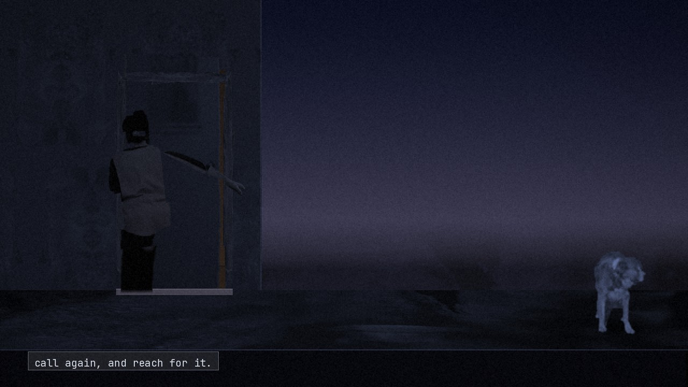
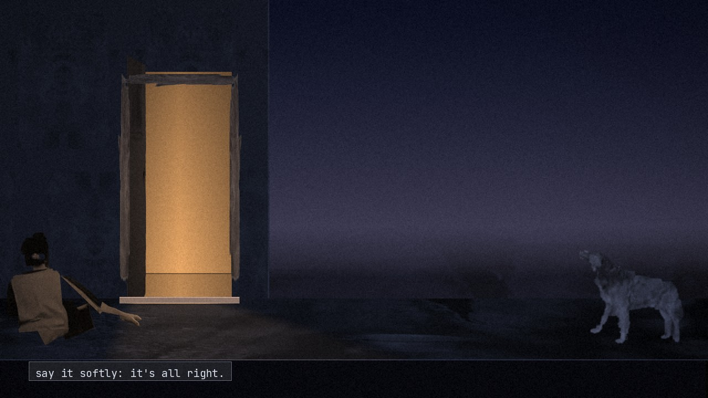
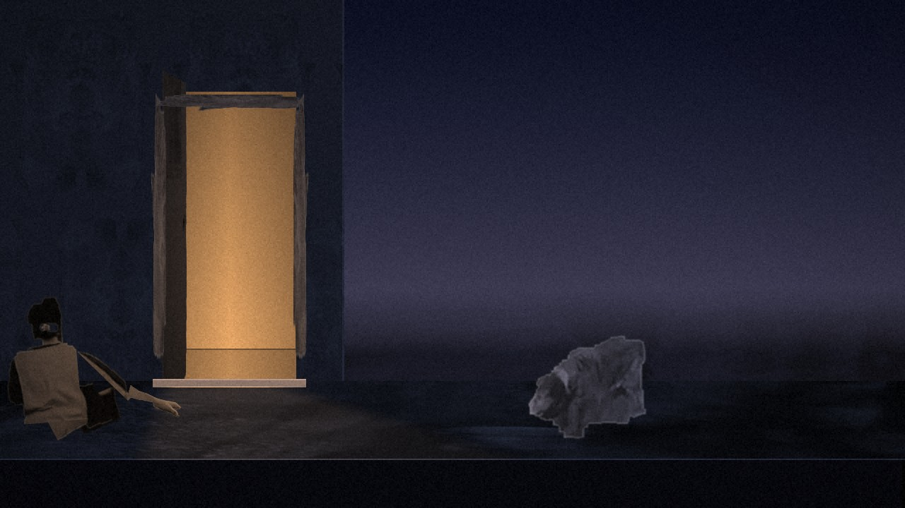

Measured from this swarm's own render (its trace) by check_handmade.py. The score's time, then the time the choice appears.
Each round is a fresh agent that sees the film, the brief and this swarm's SCION prompt, never the builder's notes, and returns a verdict and falsifiable repairs. Stopped at an independent pass.
# SCION 29 · critic round 1 · DOES NOT PASS Independent critic (fresh agent; frames every 0.5 s plus every frame in the turn windows and zooms; verdict from the picture before any builder notes). Per choice: backing away reads (a head-low drawing facing the house moves away from 1.00); turned back reads, the turn weak (front-on frames read; 3.75–3.79 a muddled blob; faces away from 3.83, lies facing away 4.6–7.4); turning to look weak (on time, but the head looks pasted onto the shoulder facing up-left 7.46–8.12, a second head; a straight seam and a dark rectangular gap across the torso at 7.83); coming head low reads (the archive walk re-timed, head below the back the whole way, feet accounting for the travel); lying across the sill weak (a one-frame standing pop at 23.81; the composed lie floats with a hard horizontal box edge under the torso and hind legs hanging as separate pieces, more crouch than lie; head and forelegs over the lit sill, rump outside); looking in and staying reads (a back-of-head piece into the lit opening 26.5–28.1, in depth). Not a dog in every frame. Language: bottom-up: its own graph cuts, a clean plate of the porch, RGBA pieces with contour and failure masks; the lying dog assembled from cut parts; fundamentally different from PAE-00. Weakness: much of the screen time is replayed archive footage. Defects: a boxy rectangular hindquarter on the watching drawing (on screen ~9 s); dark rectangular holes and straight seams in the composed lie (background islands, against the bar's source-edge fidelity); a light 1–2 px rim on every cut and staircasing from the upscaled source; the dog small and low-contrast 0–14 s; footfalls at room-tone level. Soft voice ≥12 dB under the calls. Rights clean. Repair conditions (ranked): 1. Composed lie 4.6–7.4 and 24–32: no rectangular notches or straight seams at 1280×720; belly and hindquarters on the floor, no hanging leg pieces. 2. Look-back 7.46–8.4: a single head turning from the body toward the door, no pasted second head, no torso seam. 3. Watching drawing: a true contour for the hindquarter, no straight edge longer than ~10 px. 4. 3.75–3.79 and 23.81: no muddled or popped frame. 5. Remove or isolate the light rim on every cut; raise the dog's contrast 0–14 s.
# SCION 29 · critic round 2 · DOES NOT PASS (narrowly) Fresh independent critic (all 768 scene frames, contact sheets and edge zooms; judged before reading round 1). All six choices read: backing away (a head-low drawing facing the house moves away from 1.00); turned back (front-on turn drawings 3.54–3.71 read as a dog, walks away from 3.75, back clear by 3.9, lies facing away 4.46–7.42); turning to look (a front-on drawing with the head turned to the door at 7.458; one body, one head); coming head low (below the back to the door; walk drawings every 2–3 frames, the feet accounting for the travel; the dog warms toward the light); lying across the sill, weak but reads (no standing pop; belly down, head and forelegs over the lit sill, rump and tail out; chest high, more sphinx than lying); looking in and staying (a back-of-head piece into the lit opening 26.54–28.08, soft). A dog in every frame. All four invariants hold. Bottom-up: yes: its own max-flow cuts of public-domain film, a clean plate, RGBA pieces with contour and failure masks, the lie built from its own cut parts. Cut quality does not fully meet the GrabCut bar's "source-edge fidelity at normal size". Defects: the refusal lie (4.46–7.42, ~3 s on screen) has a dead-straight ~110 px base with rounded-rectangle corners (the mask box, not a contour) and a dark jaw-like gap between the foreleg pieces; one watching drawing has a slab hindquarter with ~38 px straight sides (9.08, 10.42, 11.58, 12.92, 14.25–14.67); the sill lie has a dark rectangular seam at the chest/foreleg joint and a stepped notch along the base; a thin stub juts from the rump of the walk-away drawing; staircased contours from the upscaled source; a one-frame pop at 4.46. Soft voice 12–13 dB under the calls; footfalls ~6 dB above room tone. Rights clean. Round-1 conditions: 2, 4, 5 met; 1 partly met; 3 not met. Repair conditions (ranked): 1. 4.46–7.42: no straight outline segment over 15 px at 1280×720 on the lying dog (re-cut a true contour where the box crop is), and no dark gap between the foreleg pieces. 2. 8.4–14.7: every watching frame shows separate hind leg and tail outlines, no straight edge over 10 px. 3. 24–32: no rectangular dark seam at the chest/foreleg joint and no step in the base outline.
# SCION 29 · critic round 3 · PASS (narrow) Fresh independent critic (all 768 scene frames; contact sheets at 1280×720; the requested windows frame by frame with 3–5× outline zooms; judged before reading rounds 1 and 2). All six choices read, within ±0.25 s: backing away (a crouched head-low drawing facing the house moves away from 1.00); turned back (front-on turn drawings 3.54–3.71, walks away head-down from 3.75, lies facing away rump to the door 4.46–7.42); turning to look (a front-on drawing turns its head to the door at exactly 7.46, then 3/4, then profile); coming head low (walk drawings every 3–4 frames, head below the back, feet accounting for the travel, warming toward the light); lying across the sill (head and forelegs inside the lit opening, rump and tail outside, belly down, more sphinx than flat); looking in and staying (the back of the head into the lit doorway 26.58–28.1). The watching hold (8.04–14.71) reads as waiting but is one held cutout for 6.7 s with no visible change. A dog in every frame; all four invariants hold. Bottom-up: max-flow graph cuts of public-domain film with seeds and a clean-plate porch; the lie built from the cut pieces of its own frames. Cut quality now broadly meets "source-edge fidelity at normal size": edges soft and scalloped rather than boxed; the staircasing is the upscaled ~70 px source dog, the translucent rump real motion blur. Round-2 conditions: all three met (no box base on the refusal lie, the foreleg gap gone; two separate hind-leg outlines on the watching drawing; no seam or step on the sill lie). Remaining (optional, not pursued: stopped at an independent pass per the SCION doctrine): a ~25 px grey rectangle beside the chest at 3.67–3.71; a thin stub on the rump of the walk-away and walk drawings; a stair-stepped rump top on one walk drawing; a ~3 px scallop along both lying bases; the watching hold has no ear, tail or breath change. Soft voice 14–18 dB under the calls, above room tone. Rights clean.
method · every asset and its rights · ledger of attempts · build · the prompt
The dog that turns its back is the same drawing as the dog that comes.
Real people's Quick, Draw! dog doodles, chosen by eye from 4,164 and labelled by pose; the house, door, moon, steps, arm and hand are doodles too, drawn on in their makers' stroke order.
Moved byA decoder picks a whole drawing for every pair of frames, with costs for pose, for changing identity and for swapping off a footfall. A drawing is only scaled, moved or mirrored, never bent.
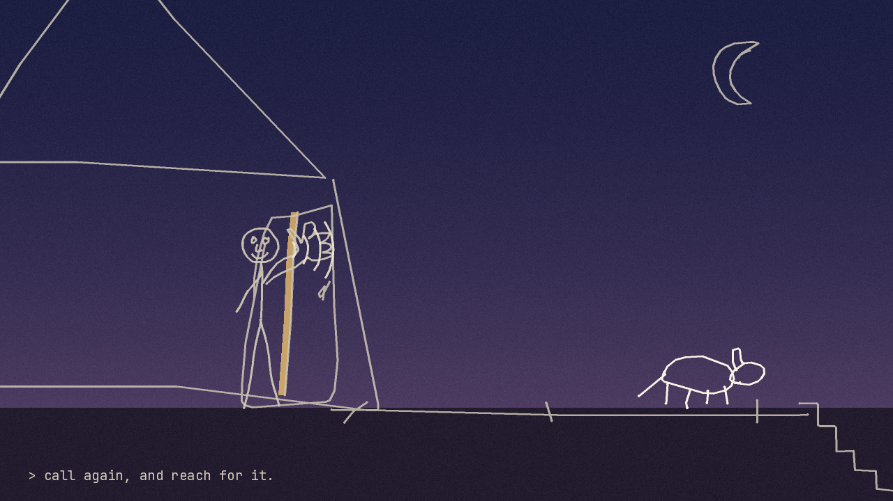
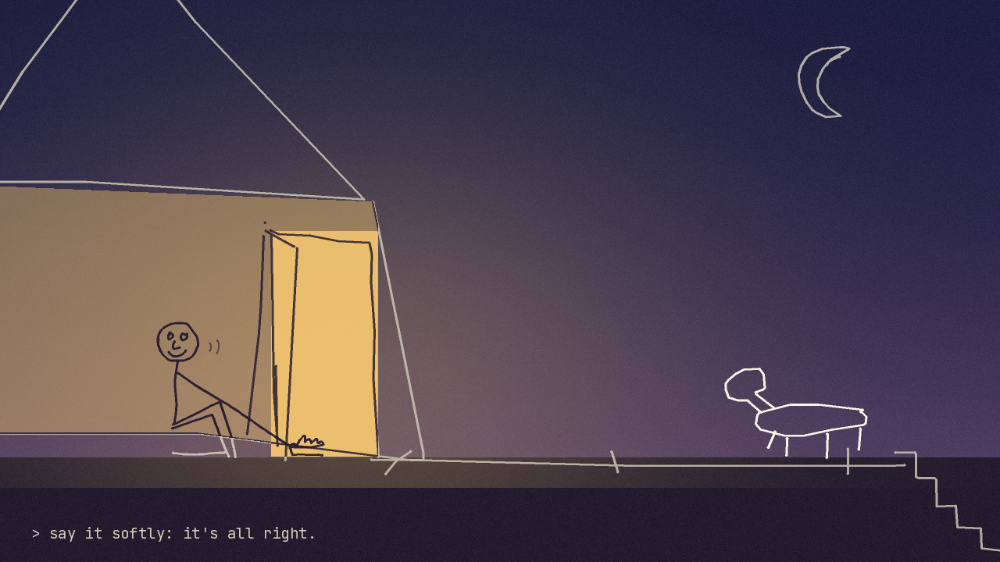
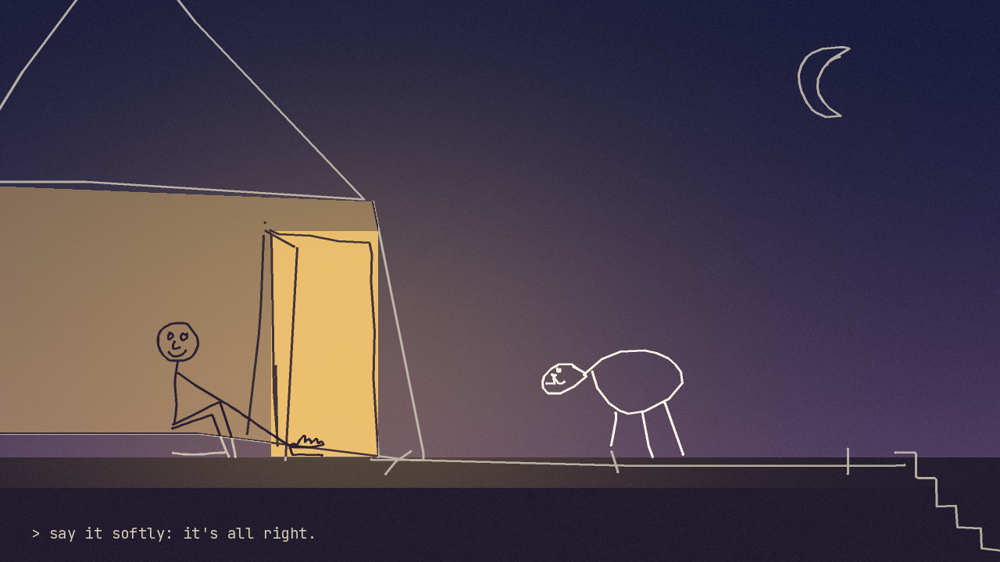

Measured from this swarm's own render (its trace) by check_handmade.py. The score's time, then the time the choice appears.
Each round is a fresh agent that sees the film, the brief and this swarm's SCION prompt, never the builder's notes, and returns a verdict and falsifiable repairs. Stopped at an independent pass.
# SCION 38 · critic round 1 · DOES NOT PASS ("reference stronger")
Independent critic (fresh agent; all 768 scene frames, contact sheets, per-frame difference for swaps; verdict written before reading the builder's notes).
Per choice: backing away weak (cowering reads, the backing barely moves); turned back reads 3.42–4.4 and 5.75–7.4, lost 4.5–5.7 in an unfaceable curl; turning to look reads well (7.50, best in the film); coming head low weak (walk doodles head level or up); lying across the sill reads (23.83); looking in weak (26.58 drawing faces the camera, not the door), staying reads.
Bottom-up: yes. Every dog frame is a whole real Quick, Draw! drawing swapped whole on twos, never bent; the set is doodles too. Fundamentally not a cut-out.
Craft: identity flicker in the walk (three different dogs cycling every 0.33–0.67 s); held drawings slide with static legs; ambiguous refusal curl; retreat too small; face-on look-in. Sound follows events.
Rights: clean; all 56 key_ids verified against the source files; CC BY 4.0 credited.
Repair conditions (ranked):
1. t=15.0–23.7: at most two library drawings sharing head shape; ≤1 identity change per 2 s; no switch back within 1 s.
2. During the walk a held drawing moves ≤5 px (at 1280 wide); motion from selected stride drawings, not sliding.
3. t=14.7–23.7: head top below the back line in ≥80% of frames.
4. t=26.5–28.0: head in profile pointing into the doorway (not face-on).
5. t=1.0–2.33: dog moves ≥60 px (1280 wide) away, facing the person; t=3.42–7.4 head always on the far side from the door, no ambiguous curl.
Keep: the 7.50 turn to look, the lying across the sill, the whole-drawing doctrine.
# SCION 38 · critic round 2 · DOES NOT PASS (narrowly; "reference stronger") Fresh independent critic (all 912 frames, contact sheets on twos in the dense windows, dog x measured from stroke pixels; judged before reading round 1). Per choice: backing away reads (137 px away, facing the person); turned back reads (the dome at 3.5–4.5 looks a little like a turtle); turning to look reads well (best passage); coming head low weak (head low and timed, but each held drawing slides with frozen legs ~2 px/frame; footfall ticks over legs that never move); lying across the sill reads (but the 23.83–25.5 drawing looks like a cat); looking in and staying reads (profile into the doorway at 26.5, settles 28.33). One dog? No: about 12 people's dogs, one per pose; swaps land on choices so they read as pose changes, but the species drifts. Bottom-up: yes; whole drawings, never bent; rights clean (CC BY 4.0, key_ids on the end card). Round-1 conditions: 1 partly met (two walk drawings, but different head shapes); 2 not met (continuous slide); 3, 4, 5 met. Repair conditions (ranked): 1. Walk 14.7–23.7: a held drawing moves 0 px; x changes only on swaps, at least every 6 frames, so the swaps are the travel; footfall sounds within ±1 frame of swaps; at most two drawings sharing a head shape. 2. Lie 23.83–26.4: replace the cat-like drawing (key_id 5424558905491456) with a lying dog; at most 2 distinct drawings across 23.8–32. 3. Push-in 21–24: the moon fully in or fully out of frame. Keep: the 7.50 turn to look, the sill composition at 28, the selection doctrine.
# SCION 38 · critic round 3 · PASS (narrow) Fresh independent critic (all 768 scene frames, contact sheets and consecutive close-ups, position from stroke pixels, sound per frame; judged before reading round 2). Per choice: backing away reads (low crouch drawing, backs ~100 px); turned back reads (the dome at 3.5–4.5 still a little turtle-like); turning to look reads, the best passage (front-facing seated 7.50, profile to the door 7.83); coming head low weak (two different drawings alternate, box body on four legs and round body on two; head not clearly low); lying across the sill reads (head and paws inside the lit doorway drawn dark, body outside drawn white); looking in and staying reads (profile head pushes into the doorway 26.50–28.21, settles and holds). Bottom-up: yes. Every pose a whole Quick, Draw! doodle, swapped, never bent; a held drawing is identical across its frames; CC BY 4.0 credit and all 10 key_ids on the end card. Round-2 conditions: all three met (no slide while held, the swaps are the travel, footfalls on swap frames 0 frames off; the cat-like drawing gone; the moon fully in, then fully out at the cut). Remaining polish (not pursued: stopped at an independent pass per the SCION doctrine): a matched four-legged, head-low walk pair; the retreat still slides a held crouch drawing; 6.7 s of one drawing held dead still while watching; the lie-down happens on a cut, so the act of lying is never seen.
method · every asset and its rights · ledger of attempts · build · the prompt
It solves the turns, the place every earlier swarm failed, by never pretending the dog is a solid.
Separate drawings made in code for this film: three body views (profile, rear three-quarter, rear), lying versions of the rear two, and four head views, the other side by flipping a near-symmetric dog (dark saddle, pale collar ring, dark tail). The archive dog gave markings and proportions only.
Moved byA turn is a swap to the next view, never a squash or a rotation: the head goes first, the body follows one view at a time, the feet step at each swap, and the torso stays on the score's x through every swap. The door is the only thing that rotates, because a door is flat.
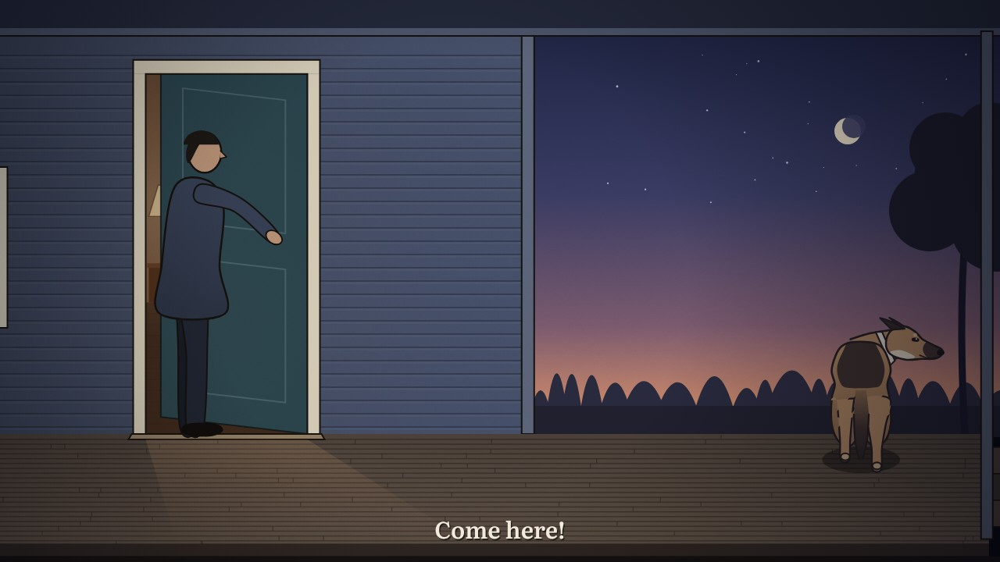
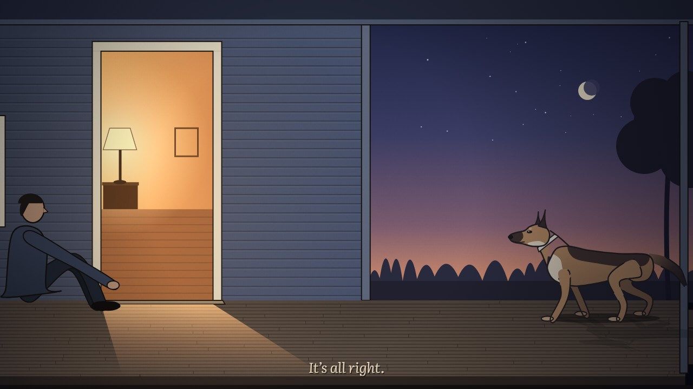
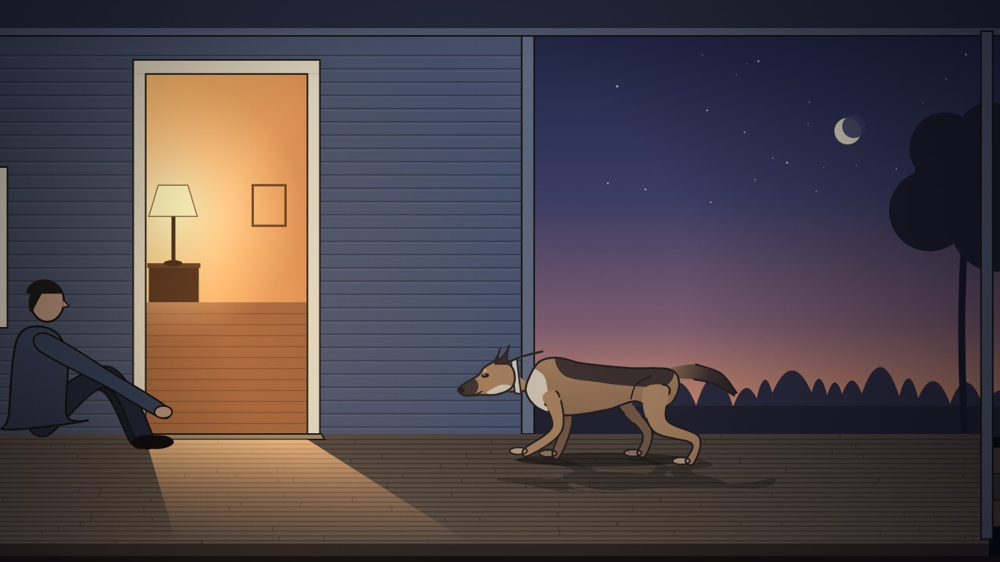

Measured from this swarm's own render (its trace) by check_handmade.py. The score's time, then the time the choice appears.
Each round is a fresh agent that sees the film, the brief and this swarm's SCION prompt, never the builder's notes, and returns a verdict and falsifiable repairs. Stopped at an independent pass.
# SCION 39 · critic round 1 · DOES NOT PASS (one blocking defect; narrow repair) Independent critic (fresh agent; every frame through both turns; verdict from the picture before any builder notes). Per choice: backing away reads (crouch, ears flat, tail tucked, moves away facing the door); turned back reads (rear 3/4 3.51, rear 3.55–3.75 with the head looking away, back clear before 3.9; lies facing away 4.4–7.46); turning to look reads on time (the head comes round at 7.47 and is in profile to the door by 7.63 while the body is still rising: the head leads); coming head low reads (below the back line from 14.8, legs step, no sliding); lying across the sill reads, weak staging (a real lie, but "half in" is only a 2D overlap with the frame); looking in reads and is on time (back of the head into the lit room 26.8–28.0) but see defect A. One consistent dog through both turns: saddle, collar, ears and tail match in every view; no tangle, box or giraffe frames. Bottom-up: yes. Discrete body and head views swapped at their own pivots, head ahead of the body; nothing pretends to be a continuous 3D shape; the door leaf is the only true rotation. Fundamentally different from PAE-00. Defects: A (blocking) 26.8–28.0 the back-of-head drawing floats ~40 px above the shoulders on an unfilled neck with the room showing through, against the bar's "neck attachment stationary in parent frame"; B a stray stroke from ear or collar like a leash or antenna (1.1–2.3, 3.55–3.75, 7.55–8.05, 25.8–26.4); C the seated person cropped by the left edge from 6.0; D a hip seam at 23.4; hind legs tangled at 4.4 and 7.72–8.05. Sound follows events; soft voice 13–19 dB under the calls. No state labels; end card true. Rights clean. Repair conditions (ranked): 1. 26.6–28.4: the rear head connects through a filled neck, no background showing; neck base at the same shoulder point ±4 px across head swaps. 2. No stroke >15 px leaves the head or collar outline into empty space (check 1.5, 3.65, 7.8, 26.2). 3. Lying across the sill: in at least one frame 24–32 part of the dog overlaps or is behind the sill line or jamb, or forepaws over the sill board show it in the doorway; tail outside. 4. The whole seated person in frame (x ≥ 16 px) from 6.0. 5. 4.4 and 7.7–8.0: the hind legs read as two separate legs. Keep: the head-leading turn at 7.46–8.4, the rear-view refusal, the ear and tail acting in the retreat, the head-low approach, the sound mix.
# SCION 39 · critic round 2 · PASS Fresh independent critic (every frame through both turns and the look-in, full-resolution zooms; judged before reading round 1). All six choices read: backing away (crouch, ears flat, moves away facing the door, legs alternating); turned back (profile 3.42 → rear 3/4 ~3.50 → full rear with the head turned away 3.55–3.71 → away profile from 3.75; lies facing away 4.5–7.42); turning to look on time (the head swaps round toward the door at 7.46 before the body moves; over the shoulder 7.5–8.0; left profile by 8.2); coming head low (below the back line the whole approach; feet planted); lying across the sill (a real lie by 24.3; body over the sill board between the jambs, tail across the right jamb, legitimate in a frontal elevation); looking in and staying (back-of-head view into the lit room 26.55–28.3, chin on paws from 28.6). One dog throughout; no tangle, box or giraffe frames in either turn. Bottom-up: a discrete atlas of body and head views swapped at view-specific pivots, head leading, no continuous 3D shape faked: the swarm's theorem in practice. Rights clean. Round-1 conditions: 1–4 met (the neck filled and its base steady by eye); 5 largely met. Remaining (optional, not pursued: stopped at an independent pass per the SCION doctrine): the hind leg is one thigh with two feet at 4.4 and 7.75–8.05; the nose presses on the porch post 4.5–7.4; paw strokes and the person's hand knot at 26.2 and 29–31.5; the title card's "five drawings" disagrees with the end card's count (a claim to make true).
method · every asset and its rights · ledger of attempts · build · the prompt
Nothing secondary is animated by hand, so stillness has to be earned: the holds are quiet because the energy has gone.
A dog solved and drawn in code from spheres and capsules: six torso spheres, neck and head, muzzle, four legs, two ear flaps, a seven-node tail, a collar with a tag; proportions and coat studied by eye from the archive dog, no archive pixel in the film. The person has a scarf; the door is wood on a hinge; there is a shrub.
Moved byThe primary motion follows the score, with planted feet that step. Everything secondary is solved, never keyframed: ears, tail, coat, tag, scarf, shrub and the door are springs and dampers pulled toward the pose, colliding with bodies, floor and lap, and dying away in the holds. The person's one push is sized so the door reaches its stop at 6.20 s.
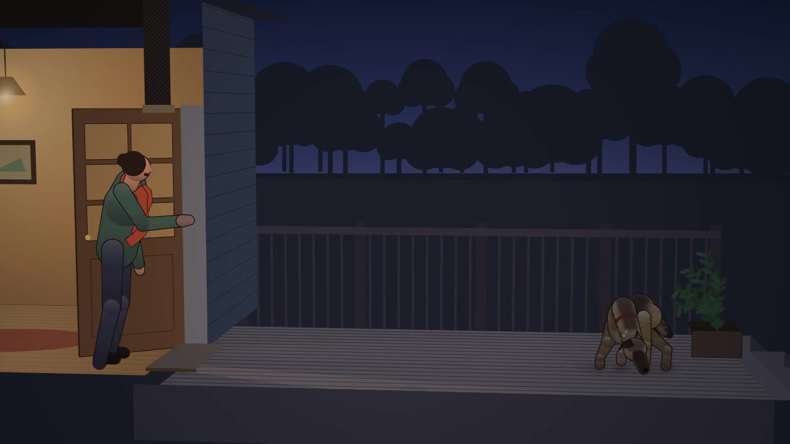
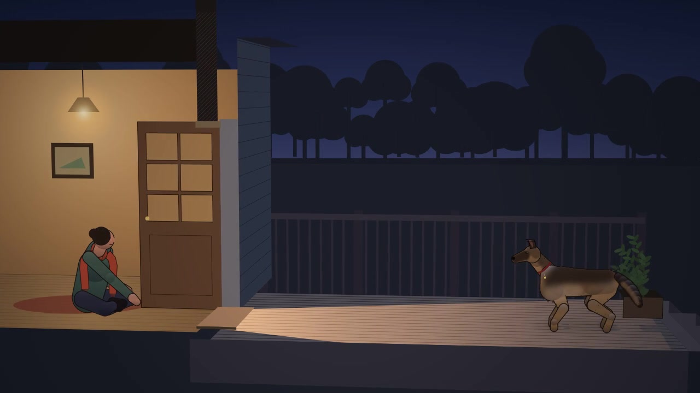

Measured from this swarm's own render (its trace) by check_handmade.py. The score's time, then the time the choice appears.
Each round is a fresh agent that sees the film, the brief and this swarm's SCION prompt, never the builder's notes, and returns a verdict and falsifiable repairs. Stopped at an independent pass.
# SCION 41 · critic round 1 · DOES NOT PASS (close) Independent critic (fresh agent; all 768 scene frames; verdict from the picture before any builder notes). Per choice: backing away reads (crouch, tail curls under, head low, backs away facing the door); turned back reads (a real rotation, edge-on frames still a dog, legs tangle briefly at 3.71, back to the door by 3.79; the neck points straight down 3.79–4.4); turning to look weak (head lifts at 7.54 but faces camera or right 7.71–8.08; comes round to the door ~8.29, ~0.8 s late); coming head low reads (below the back line from 14.58, legible walk); lying across the sill reads (a real lie, forepaws and head inside the jamb line, tail out); looking in does not read (26.7–28.0 the head only rises, the neck stretches to about twice its length, the collar slides down it, the head never turns); staying reads. Bottom-up: yes. Projected spheres and capsules; visible secondary motion with material and momentum (tail follow-through on the lie-down, tail tuck on the retreat, a pendulum tag, the scarf settling, the door swinging to a stop); holds settle (no idle wiggle); turns are true rotations. Fundamentally different from PAE-00. Defects: the open door reads as closed (the leaf face-on fills the jamb from 5.8); the look-in neck stretch; ears as small boxes with stray strands that split into fragments at 26.33–26.58 and 28.21–28.46; standing holds freeze the legs mid-stride (0–1, 9–14.5); the door light comes on slightly early; the lie-down is abrupt. Sound follows events; soft voice ~14 dB under the calls. Rights clean. Repair conditions (ranked): 1. 26.4–27.6: the head turns into the lit opening, past the person; head-to-shoulder distance within ±10% of its value at 25.0; the collar at the base of the neck. 2. From 6.2 a lit gap of interior between the leaf and the jamb at least a head wide; 24.5–32 the head and forepaws in that gap, not in front of the leaf. 3. Each ear one coherent flap in every frame (no split outlines at 26.2–26.7, 28.2–28.5), lagging the head and settling within ~0.5 s. 4. By 7.7 the nose points toward the door, the head leading the body. 5. At 0–1 and 9–14.5 all four feet planted under the body, legs near vertical. Keep: the retreat crouch and tuck, the turns as true rotations, the head-low approach, the tail follow-through, the quiet holds, the sound design.
# SCION 41 · critic round 2 · DOES NOT PASS (very close) Fresh independent critic (all 768 scene frames, every-frame crops of the windows, zooms on ears and neck; judged before reading round 1). All six choices read: backing away (crouch 1.04, tail tucks, backs away facing the door); turned back (a true rotation, back to the door by 3.79); turning to look (head over the shoulder to the door 7.58–7.67, ears prick, body follows 8.17–8.33); coming head low (below the back line from 14.6, legs step with the travel); lying across the sill (a real lie, forepaws and head inside the jamb, rear and tail out); looking in and staying (slightly weak: turns into the room at 26.55–26.7 with the neck length kept and the collar at its base, but the gaze runs level toward the person's head). The light reads; the door weakly: the leaf swings 5.3–6.0, then vanishes in one frame at 6.04 and never returns. Bottom-up: yes. Projected spheres and capsules with sprung parts; tail tuck and follow-through, ears flop on the head turn, the tag swings, the scarf settles; quiet holds. Defects: (a) the door leaf pops out at 6.04, against the bar's "consequential world" and the end card's claim that the door is a damped spring with contacts; (b) standing holds freeze the legs mid-stride (0–1, 9–14.5); (c) the person sits while the door swings, so the circumstances overlap; (d) the nose over the planter at 3.9–4.5; (e) the ear lies on the cheek at 28.2–28.5. Sound follows events; soft voice ~14 dB under the calls. Rights clean; no state labels. Round-1 conditions: 1, 3, 4 met; 2 met by deleting the leaf (defect a); 5 not met. Repair conditions (ranked): 1. 6.0–32.0: the door leaf visible in every frame, at rest against a stop, leaving an opening at least a head wide; no single-frame disappearance. 2. 0–1 and 9–14.5: all four feet planted under the body, legs within ~15° of vertical. 3. Optional: 26.7–28.0 the eye line passes above the seated person's head, into the house.
# SCION 41 · critic round 3 · PASS Fresh independent critic (all 768 scene frames; every frame of the door region 6.0–32; a frame-difference pop scan; zooms on ears, neck and feet; judged before reading the reviews). All six choices read: backing away (ears flatten, crouch, tail tucked, backs away facing the door); turned back (a real rotation through a rear three-quarter view, faces away by 3.80, lies facing away to 7.5); turning to look on time (head over the shoulder 7.55–7.64, ears prick, rises, body follows 8.17–8.34); coming head low (below the back the whole approach, legs alternate); lying across the sill (a true lie, head and forepaws inside the jamb, rear and tail out); looking in and staying (weakly: the head turns into the room 26.75–26.92, then holds at about the person's head height; settles chin-down by 28.5, still to 32). "The door opens and light comes out" reads: light spills through the gap, the door swings open 5.9–6.3, the light widens across the porch. Bottom-up: spheres and capsules on springs with real follow-through (tail tuck, ears flop on the head turn, the tag swings, the scarf settles); energy dies away in the holds. Self-made; only proportions measured from the public-domain kit. Round-2 conditions: 1 met (the leaf visible in every frame, no pop); 2 met (legs near vertical in the holds); 3 partly met (optional). Remaining (optional, not pursued: stopped at an independent pass per the SCION doctrine): the held look-in gaze at about the person's head height; near and far legs coincide in side views (two legs show); the neck thins at 26.8–27.0; the open door is a thin edge-on sliver.
method · every asset and its rights · ledger of attempts · build · the prompt
The dog answers sounds, not lines: each choice is a measured lag after a vowel.
The seven spoken lines synthesized with CMU Flite, whose own phoneme timing is the film's clock; ten profile mouth shapes for the person; a dog of 172 distinct inked drawings in side, three-quarter and rear views; arcs at the mouth and at the dog's ear and paw ticks computed from the audio; every other sound synthesized and panned by screen position.
Moved byA typed list of sound events places each line so that the vowel the dog answers, plus a hearing latency, lands on the score's choice; an exposure sheet names every frame's drawing, mouth, door and light. Drawings change on twos and the body moves only when a new drawing is shown, so planted feet stay planted; the turns pass through drawn views head first.

Measured from this swarm's own render (its trace) by check_handmade.py. The score's time, then the time the choice appears.
Each round is a fresh agent that sees the film, the brief and this swarm's SCION prompt, never the builder's notes, and returns a verdict and falsifiable repairs. Stopped at an independent pass.
# SCION 47 · critic round 1 · PASS Independent critic (fresh agent; frames every 0.5 s and every frame at each cue; audio measured as 50 ms RMS and spectrogram; verdict from the picture and sound before any builder notes). Audio measured: room tone ~−51 dB; calls −10 to −16 dB; soft lines −27 to −34 dB (17–19 dB under the calls, 17–24 dB above room tone); paw ticks ~−43 dB through the approach. Mouth against speech: opens 1–2 frames ahead of each onset, closes on the "m" of "come", stays shut through silences; no flapping. All six choices read, each lagging its own sound plausibly: backing away (crouch 1.13 and backs away facing the door, ~0.55 s after the call); turned back (through drawn three-quarter and rear views, away by 3.83, lies curled to 7.6; ear arcs flick on each call); turning to look, borderline late (ear arcs at the "It's" onset; head over the shoulder 7.62–7.66, within tolerance; rises and faces the door by 8.45); coming head low (at or below the back line, even pace); lying across the sill (legs tucked, head and forequarters inside the door frame, tail out); looking in and staying (the back of the head to the viewer, the muzzle into the lit room, 26.7–27.95). A dog in every frame. Language: genuinely built from sound events: every answer lags its sound; ten profile visemes with closures; visible sound (mouth arcs, ear arcs, paw ticks) computed from the audio. The dog is code-drawn, not a stock rig; different from PAE-00. The words are dialogue set as spoken, not state labels; the ear arcs telegraph hearing without replacing the acting. Rights: clear (CMU Flite's permissive grant checked on this machine; output unencumbered; own work, OFL fonts, a public-domain shape reference). Remaining (optional, not pursued: stopped at an independent pass per the SCION doctrine): the head-round onset within 0.1 s of 7.458; captions clearing within 0.15 s of their audio; the lying body and tail elongated; stiff transition drawings at 3.83–3.87 and 7.82–7.87; paw ticks not verified to the frame.
method · every asset and its rights · ledger of attempts · build · the prompt
Every frame says whether the dog in it was photographed or invented.
One plate, Pl. I, The Threshold: a sectional elevation of a wall, doorway and porch at dusk, line-engraved and hand-coloured. The dog is traced by hand from one frame of Amateur Film New Jersey C into eleven pieces, each engraved with a line screen from the scan's own tone; both turns are the film's own frames, some printed as reversed impressions. The door from Straight Talk, the hand from The Door to Heaven. No Library of Congress item is used or claimed.
Moved byPieces rotate about hand-placed joints, legs by two-bone IK with stance feet pinned. Under the image a key shows the scan frame in use, its source and rights, and the state of the drawing: as photographed, printed reversed, or, in red with red pins at the joints, re-posed as invented motion.

Measured from this swarm's own render (its trace) by check_handmade.py. The score's time, then the time the choice appears.
Each round is a fresh agent that sees the film, the brief and this swarm's SCION prompt, never the builder's notes, and returns a verdict and falsifiable repairs. Stopped at an independent pass.
# SCION 50 · critic round 1 · DOES NOT PASS (narrowly) Independent critic (fresh agent; frames every 0.5 s plus every frame in the turn windows; verdict from the picture before any builder notes). Per choice: backing away reads (head drops, crouch, backs away facing the door, legs stepping; the 2.33 settle barely distinct); turned back reads, the turn weak (the source film's own frames re-timed 3.46–3.92; frontal head-down at 3.54–3.83 acceptable, but 3.458–3.500 a headless lump like a sheep or bear; the back held 3.96–7.46); turning to look reads (head over the shoulder to the door at 7.46, clear 7.7; the reverse replay at 8.458–8.541 is the same lump); coming head low reads; lying across the sill reads (a sphinx lie, forequarters over the sill stone inside the frame, tail on the porch); looking in and staying reads (the back of the head into the lit room 26.7–28.2, in depth). About 0.2 s across the two turns does not read as a dog. Language: built bottom-up. The dog traced and cut from the archive film's frame, line-engraved from the scan's own tone, posed with pivots; documented frames swapped in as frames, not tweened; a drawn sectional elevation with hand-coloured washes. The plate key is the strongest element: a live thumbnail of the scan frame in use, a source line, "re-posed: invented motion" in red or "as photographed, the film's own turn, re-timed" in black; red pins only on invented joints. They support the reading; no choice names printed. Not a maquette with a style on top; a different operation from PAE-00. Defects: the lump frames; pops in scale, tone and line weight at each puppet/film swap; a boxy head piece with a hard collar edge and a flat, cat-like back of the head; footfalls barely above the crickets, a faint door, no event at the lie-down; the end card's frame list does not match assets.json; white-box captions read as UI tags. Soft voice ~14 dB under the calls. Rights clean; no Library of Congress item claimed. Repair conditions (ranked): 1. 3.42–3.96 and 8.04–8.62: every frame shows a recognisable head and legs; drop or hold past the lump frames, keep the turns documented and the key truthful. 2. No visible jump in the dog's height or tone at each puppet/film swap. 3. Footfalls audible 14.7–23.8 (≥6 dB over the cricket bed), with an event at the lie-down. 4. The end card's frame list matches assets.json. 5. Optional: soften the head piece's collar edge. Keep: the live plate key, the red pins on invented motion only, the over-the-shoulder look, the back-of-head look-in, the sphinx lie.
# SCION 50 · critic round 2 · DOES NOT PASS (narrowly) Fresh independent critic (all 768 scene frames; every frame through both turns; audio per window; judged before reading round 1). Per choice: backing away reads; turned back reads (the film's own frames 3.46–3.92, back to the door from 3.96 to 7.38); turning to look reads at 7.46 then weak (the head over the shoulder to the door, clear by 7.7, but the frontal film frames at 8.04–8.58 point the head screen-right, away from the door, right after "It's all right": it looks, looks away, then faces the door at 8.62); coming head low reads; lying across the sill reads (forepaws and head in the door frame, tail on the porch); looking in and staying reads (the back of the head into the lit room 26.88–28.04). Not a dog in every frame: 3.75–3.79 a shaggy mass with no readable head. Bottom-up: yes. The dog traced and cut from the archive frame, engraved from the scan's own tone, posed with pivots; the film's own frames swapped in whole; the plate key carries the provenance and no choice names. Rights clean; no Library of Congress item claimed. Round-1 conditions: 1 partly met (the named frames now read; 3.75–3.79 still lumps); 2, 3, 4 met; 5 (optional) not met. Audio holds: soft voice ~15 dB under the calls; footfalls ~12 dB above the bed; an event at the lie-down. Repair conditions (ranked): 1. 7.46–8.62: the head points toward the door in every frame (e.g. mirror the second turn's frames and mark them as a reversed impression in the key). 2. 3.75–3.79: an identifiable head and legs (hold a neighbouring good frame or drop the ambiguous ones). 3. Optional: soften the collar edge of the head piece.
# SCION 50 · critic round 3 · PASS Fresh independent critic (all 768 scene frames; contact sheets every 1/3 s; every frame at full resolution through both turns and the key windows; audio RMS per 0.25 s; judged before reading rounds 1 and 2). All six choices read: backing away (head drops, tail tucks, steps back facing the door); turned back (the film's frontal frames from 3.458, right profile from 3.83, the back to the door from 3.96, lying turned away through 7.42 as the score has it); turning to look on time (the head over the shoulder at 7.458 while the body faces away; the reversed prints 8.04–8.58 keep the head on the door side; the f033 print at 8.04–8.08 is the weakest frame, but head and legs are there); coming head low (below the back 14.79–23.8, legs stepping); lying across the sill (flat by 24.4, forelegs and chest in the lit door frame, hind legs and tail on the porch); looking in and staying, slightly weak (the back of the head into the lit room 26.83–28.1, a flat cat-eared cut-out). A dog in every frame. Bottom-up: traced and cut from the archive frame, line-engraved from the scan's own tone; red pins on invented joints; documented frames swapped in whole for both turns; a live plate key giving each drawing's source and state, never a choice name. Documented and invented are distinguished, and no historical caption is invented. Rights check out; no Library of Congress item claimed. Round-2 conditions: 1 and 2 met; 3 (optional) not met. Remaining (optional, not pursued: stopped at an independent pass per the SCION doctrine): the f033 print at 8.04–8.08; shape steps at the three swaps; the hard collar patch; the flat back-of-head piece; the end card's "the two turns are the film's own frames" is loose (7.46–8.0 is the cut-piece dog). Soft voice ~16 dB under the calls, ~12 dB above the bed; footsteps ~6 dB above the bed.
method · every asset and its rights · ledger of attempts · build · the prompt
The scene says what it is the whole time: COMPOSED SCENE · archive fragments re-performed · not a recorded event.
No drawing at all. The archive dog's own footage, masked frame by frame; the woman and the door from Straight Talk, the seated man from Survival Stresses, the hand from The Door to Heaven, the wall and path from the home movie. A live strip above the stage shows every source frame in use, with its title, year, rights and the operation applied.
Moved byRe-timing and re-ordering recorded motion: its walk mirrored and played backward is the retreat; its own turn away from a person is the refusal; the door's closing swing run backward is the opening. The one pose the footage never recorded, lying down, is composed and marked COMPOSED on screen.

Measured from this swarm's own render (its trace) by check_handmade.py. The score's time, then the time the choice appears.
Each round is a fresh agent that sees the film, the brief and this swarm's SCION prompt, never the builder's notes, and returns a verdict and falsifiable repairs. Stopped at an independent pass.
# SCION 53 · critic round 1 · DOES NOT PASS Independent critic (fresh agent; saw the film, BRIEF.md and the SCION 53 prompt; not the builder's notes). Per choice: backing away reads (weak); turned back reads; turning to look reads late (~8.6 s, outside ±0.25 s on screen, double image at 8.2); coming head low reads (strongest); lying down across the sill does not read (hindquarters up, looks like sniffing the hand, body outside the jamb); looking in and staying does not read (head never lifts). Bottom-up: yes. Every figure is a SAM-masked cut of public-domain footage, re-timed; the recorded gait does the acting; provenance panel per fragment. Fundamentally not a cut-out rig. The one composited pose (the fold) is where it fails. Craft: doorway person ghosted (0-4 s); translucent sprite and mask halos; seated substitute reads as a grey heap; HUD clutter, ~9 px text, on-screen state labels name the choices. Rights: all recorded public domain / own work / OFL. On-screen timecodes unverified. Repair conditions (ranked): 1. t=23.79-24.5: hindquarters drop, body horizontal (back within ~15° of sill), no standing leg; ≥30% of length inside the jamb, tail outside. 2. t=26.4-27.4: head lifts off the hand and points into the lit doorway ≥0.5 s, then lowers, body unmoved to 32. 3. t=7.46±0.25: head visibly comes round to the door; no double exposure 7.3-8.5. 4. t=0-4.5: person in doorway reads as a solid standing figure (opaque, head or torso). 5. On-screen state labels removed during the scene; source cards may stay. Keep: the approach 14.7-23 s, the refusal walk-off, the provenance panel, the door light.
# SCION 53 · critic round 2 · PASS Fresh independent critic (~110 frames, every 0.2 s in the dense windows, full resolution at key times; judged before reading round 1). All six choices read: backing away (reverse playback, body facing the call); turned back (turns 4.0–4.4, lies head away 6.5); turning to look (7.7, within tolerance, no double exposure, but a hard cut from lying to standing); coming head low (strongest passage, nose to the ground 14.8–23.6); lying across the sill (flat from 24.2, front half inside the jamb, lit warm); looking in and staying (head lifts 26.6–28.0, body unmoved; weak in that the door leaf fills most of the doorway). Bottom-up: every figure a SAM-masked cut from public-domain footage; live provenance strip with source, year, rights, frame, operation; "COMPOSED SCENE · not a recorded event" throughout and composed poses tagged; unknown timecodes left unknown; every source credited. Round-1 conditions: 1–4 met; 5 mostly met (operation tags "turn" and "comes round" still partly name choices). Remaining defects (polish, not pursued): mask frame f046 renders legless (1.8, 20.5, 22.0); hard cut at the turn 7.5; the door leaf blocks the lit interior during the look-in; small strip text (~9–10 px). Verdict: PASS. Stopped here per the SCION doctrine (stop at an independent pass).
method · every asset and its rights · ledger of attempts · build · the prompt
The film can answer, for any pixel, where it came from and what was done to it.
One frame of the home-movie dog cut along its SAM mask and recorded cut lines into head, body and legs, the tail from another frame, each in a dusk and a lamplight colouring; the dog's own turning frames for both turns. The Straight Talk door, a woman cut from Straight Talk, the hand from The Door to Heaven, a miner's lantern from Anthracite, wall stone from the home movie, Quick, Draw! moon, trees and fence. Every image is a node in a 367-node lineage graph with a content hash, its parents, its operation and its rights.
Moved byPivots and a planted-foot walk for the puppet; hard substitution through single clean archive frames for the turns; the door's closing swing played as its opening. Every frame is composed only from its recorded layers: 287 derived images re-run from source reproduce their hashes, and frames rebuilt from the records alone match the render bit for bit.

Measured from this swarm's own render (its trace) by check_handmade.py. The score's time, then the time the choice appears.
Each round is a fresh agent that sees the film, the brief and this swarm's SCION prompt, never the builder's notes, and returns a verdict and falsifiable repairs. Stopped at an independent pass.
# SCION 54 · critic round 1 · DOES NOT PASS (narrowly) Independent critic (fresh agent; frames every 0.5 s plus dense windows, contact sheets, full resolution; verdict from the picture before any builder notes). Per choice: backing away reads (head below the back at 1.05, moves away facing the door, legs alternating); turned back weak (the turn uses archive frames of the dog walking toward camera; 3.84–7.42 the "back" is the cut body with its head cut away, a headless furry lump; double-exposure tangles at 3.50 and 3.75–3.80); turning to look reads (the head pops round to the door at 7.466, on time; a two-headed crossfade at 7.71 and a blur at 7.92); coming head low reads; lying across the sill reads (flat by 24.2, head and forelegs inside the lit frame, rump and tail out); looking in weak to reads (the head lifts toward the doorway at 26.6–26.8, a little late, small). Not a dog in every frame. The door leaf is open from 0 s, so "the door opens" reads only as light. Bottom-up: yes. The audit holds (367 nodes, 287 derivatives re-executed with no mismatch, no orphan layers, 9 frames rebuilt, documented and inferred tags kept apart); the dog is a puppet of cuts from one archive frame swapped with real archive turning frames, re-cut and re-timed to the score. Fundamentally different from PAE-00 and from simply re-performing footage. The on-screen provenance strip never names the dog's state but is barely legible. Defects: the headless refusal held 3.6 s; crossfade tangles at 3.50, 3.75, 7.71, 7.92; the same head-low pose for fear and approach; the door open from the start; the strip illegible; the soft voice only ~6 dB over room tone. Rights check out (hashes spot-checked against the kit; Quick, Draw! key_ids credited). Repair conditions (ranked): 1. 3.9–7.42: every frame shows the head as part of the silhouette, turned away or low on the far side, rump and tail toward the door. 2. No frame 3.40–4.0 or 7.46–8.1 shows two overlapping heads or a blurred double body (check 3.50, 3.75, 7.71, 7.92). 3. The head turn into the doorway completes by 26.65. 4. The door leaf visibly moves open between ~6.0 and 7.0. 5. The soft voice ≥10 dB above room tone and ≥6 dB below the calls. Keep: the retreat, the head-low approach, the lying pose across the sill, the archive hand's low offer, the lineage graph on the end card.
# SCION 54 · critic round 2 · PASS Fresh independent critic (all 768 scene frames, every frame in the requested windows, contact sheets; judged before reading round 1). All six choices read on time: backing away (head below the back, moves away facing the door, legs alternating); turned back (archive turning frames 3.42–3.75, one body each frame; profile facing away 3.79–7.42 with the head part of the silhouette, low on the far side, rump toward the door); turning to look (the head comes round to the door at 7.46; a one-frame stutter at 7.67); coming head low (below the back to 23.5, legs stepping); lying across the sill (flat by 24.2, head and forelegs inside the lit frame, rump and tail out); looking in and staying (head level into the lit doorway 26.5–28.4, close to the person's hand). A dog in every frame inspected. Bottom-up: a puppet of cuts from the archive home movie swapped with its own turning frames; the per-frame source strip legible and never naming the dog's state; the end card's graph built from the 367-node lineage; every audit check passes (287 derivatives re-executed with no mismatch, no orphan layers, 9 frames rebuilt, no unknown rights). Round-1 conditions: all five met (the door swings open 6.29–6.9 with the light following; soft voice ~12.7 dB above room tone and ~16 dB under the calls). Remaining (optional, not pursued: stopped at an independent pass per the SCION doctrine): the settled pose 28.6–32 is a lumpy heap whose head sinks below the sill line (the last image of the scene); the 7.67 one-frame reversal; mask-lumpy frames at 3.50 and 7.92; fear and approach share a head-low pose; the dog stands rather than lies through the refusal.
method · every asset and its rights · ledger of attempts · build · the prompt